Kapitel 4 Dynamics: Force and Newton’s Laws of Motion
4.1 Connection for AP® Courses
Newton’s laws of motion describe the motion of the dolphin’s path. (credit: Jin Jang)
Motion draws our attention. Motion itself can be beautiful, causing us to marvel at the forces needed to achieve spectacular motion, such as that of a jumping dolphin, a leaping pole vaulter, a bird in flight, or an orbiting satellite. The study of motion is kinematics, but kinematics only describes the way objects move—their velocity and their acceleration. Dynamics considers the forces that affect the motion of moving objects and systems. Newton’s laws of motion are the foundation of dynamics. These laws provide an example of the breadth and simplicity of principles under which nature functions. They are also universal laws in that they apply to situations on Earth as well as in space.
Isaac Newton’s (1642–1727) laws of motion were just one part of the monumental work that has made him legendary. The development of Newton’s laws marks the transition from the Renaissance into the modern era. This transition was characterized by a revolutionary change in the way people thought about the physical universe. For many centuries natural philosophers had debated the nature of the universe based largely on certain rules of logic, with great weight given to the thoughts of earlier classical philosophers such as Aristotle (384–322 BC). Among the many great thinkers who contributed to this change were Newton and Galileo Galilei (1564–1647).
Isaac Newton’s monumental work, Philosophiae Naturalis Principia Mathematica, was published in 1687. It proposed scientific laws that are still used today to describe the motion of objects. (credit: Service commun de la documentation de l'Université de Strasbourg)
Galileo was instrumental in establishing observation as the absolute determinant of truth, rather than “logical” argument. Galileo’s use of the telescope was his most notable achievement in demonstrating the importance of observation. He discovered moons orbiting Jupiter and made other observations that were inconsistent with certain ancient ideas and religious dogma. For this reason, and because of the manner in which he dealt with those in authority, Galileo was tried by the Inquisition and punished. He spent the final years of his life under a form of house arrest. Because others before Galileo had also made discoveries by observing the nature of the universe and because repeated observations verified those of Galileo, his work could not be suppressed or denied. After his death, his work was verified by others, and his ideas were eventually accepted by the church and scientific communities.
Galileo also contributed to the formulation of what is now called Newton’s first law of motion. Newton made use of the work of his predecessors, which enabled him to develop laws of motion, discover the law of gravity, invent calculus, and make great contributions to the theories of light and color. It is amazing that many of these developments were made by Newton working alone, without the benefit of the usual interactions that take place among scientists today.
Newton’s laws are introduced along with Big Idea 3, that interactions can be described by forces. These laws provide a theoretical basis for studying motion depending on interactions between the objects. In particular, Newton's laws are applicable to all forces in inertial frames of references (Enduring Understanding 3.A). We will find that all forces are vectors; that is, forces always have both a magnitude and a direction (Essential Knowledge 3.A.2). Furthermore, we will learn that all forces are a result of interactions between two or more objects (Essential Knowledge 3.A.3). These interactions between any two objects are described by Newton's third law, stating that the forces exerted on these objects are equal in magnitude and opposite in direction to each other (Essential Knowledge 3.A.4).
We will discover that there is an empirical cause-effect relationship between the net force exerted on an object of mass m and its acceleration, with this relationship described by Newton's second law (Enduring Understanding 3.B). This supports Big Idea 1, that inertial mass is a property of an object or a system. The mass of an object or a system is one of the factors affecting changes in motion when an object or a system interacts with other objects or systems (Essential Knowledge 1.C.1). Another is the net force on an object, which is the vector sum of all the forces exerted on the object (Essential Knowledge 3.B.1). To analyze this, we use free-body diagrams to visualize the forces exerted on a given object in order to find the net force and analyze the object's motion (Essential Knowledge 3.B.2).
Thinking of these objects as systems is a concept introduced in this chapter, where a system is a collection of elements that could be considered as a single object without any internal structure (Essential Knowledge 5.A.1). This will support Big Idea 5, that changes that occur to the system due to interactions are governed by conservation laws. These conservation laws will be the focus of later chapters in this book. They explain whether quantities are conserved in the given system or change due to transfer to or from another system due to interactions between the systems (Enduring Understanding 5.A).
Furthermore, when a situation involves more than one object, it is important to define the system and analyze the motion of a whole system, not its elements, based on analysis of external forces on the system. This supports Big Idea 4, that interactions between systems cause changes in those systems. All kinematics variables in this case describe the motion of the center of mass of the system (Essential Knowledge 4.A.1, Essential Knowledge 4.A.2). The internal forces between the elements of the system do not affect the velocity of the center of mass (Essential Knowledge 4.A.3). The velocity of the center of mass will change only if there is a net external force exerted on the system (Enduring Understanding 4.A).
We will learn that some of these interactions can be explained by the existence of fields extending through space, supporting Big Idea 2. For example, any object that has mass creates a gravitational field in space (Enduring Understanding 2.B). Any material object (one that has mass) placed in the gravitational field will experience gravitational force (Essential Knowledge 2.B.1).
Forces may be categorized as contact or long-distance (Enduring Understanding 3.C). In this chapter we will work with both. An example of a long-distance force is gravitation (Essential Knowledge 3.C.1). Contact forces, such as tension, friction, normal force, and the force of a spring, result from interatomic electric forces at the microscopic level (Essential Knowledge 3.C.4).
It was not until the advent of modern physics early in the twentieth century that it was discovered that Newton’s laws of motion produce a good approximation to motion only when the objects are moving at speeds much, much less than the speed of light and when those objects are larger than the size of most molecules (about 10–9 m in diameter). These constraints define the realm of classical mechanics, as discussed in Introduction to the Nature of Science and Physics. At the beginning of the twentieth century, Albert Einstein (1879–1955) developed the theory of relativity and, along with many other scientists, quantum theory. Quantum theory does not have the constraints present in classical physics. All of the situations we consider in this chapter, and all those preceding the introduction of relativity in Special Relativity, are in the realm of classical physics.
The development of special relativity and empirical observations at atomic scales led to the idea that there are four basic forces that account for all known phenomena. These forces are called fundamental (Enduring Understanding 3.G). The properties of gravitational (Essential Knowledge 3.G.1) and electromagnetic (Essential Knowledge 3.G.2) forces are explained in more detail.
Big Idea 1 Objects and systems have properties such as mass and charge. Systems may have internal structure.
Essential Knowledge 1.C.1 Inertial mass is the property of an object or a system that determines how its motion changes when it interacts with other objects or systems.
Big Idea 2 Fields existing in space can be used to explain interactions.
Enduring Understanding 2.A A field associates a value of some physical quantity with every point in space. Field models are useful for describing interactions that occur at a distance (long-range forces) as well as a variety of other physical phenomena.
Essential Knowledge 2.A.1 A vector field gives, as a function of position (and perhaps time), the value of a physical quantity that is described by a vector.
Essential Knowledge 2.A.2 A scalar field gives the value of a physical quantity.
Enduring Understanding 2.B A gravitational field is caused by an object with mass.
Essential Knowledge 2.B.1 A gravitational field g at the location of an object with mass m causes a gravitational force of magnitude mg to be exerted on the object in the direction of the field.
Big Idea 3 The interactions of an object with other objects can be described by forces.
Enduring Understanding 3.A All forces share certain common characteristics when considered by observers in inertial reference frames.
Essential Knowledge 3.A.2 Forces are described by vectors.
Essential Knowledge 3.A.3 A force exerted on an object is always due to the interaction of that object with another object.
Essential Knowledge 3.A.4 If one object exerts a force on a second object, the second object always exerts a force of equal magnitude on the first object in the opposite direction.
Enduring Understanding 3.B Classically, the acceleration of an object interacting with other objects can be predicted by using \(a = {\sum{F/m}}\).
Essential Knowledge 3.B.1 If an object of interest interacts with several other objects, the net force is the vector sum of the individual forces.
Essential Knowledge 3.B.2 Free-body diagrams are useful tools for visualizing the forces being exerted on a single object and writing the equations that represent a physical situation.
Enduring Understanding 3.C At the macroscopic level, forces can be categorized as either long-range (action-at-a-distance) forces or contact forces.
Essential Knowledge 3.C.1 Gravitational force describes the interaction of one object that has mass with another object that has mass.
Essential Knowledge 3.C.4 Contact forces result from the interaction of one object touching another object, and they arise from interatomic electric forces. These forces include tension, friction, normal, spring (Physics 1), and buoyant (Physics 2).
Enduring Understanding 3.G Certain types of forces are considered fundamental.
Essential Knowledge 3.G.1 Gravitational forces are exerted at all scales and dominate at the largest distance and mass scales.
Essential Knowledge 3.G.2 Electromagnetic forces are exerted at all scales and can dominate at the human scale.
Big Idea 4 Interactions between systems can result in changes in those systems.
Enduring Understanding 4.A The acceleration of the center of mass of a system is related to the net force exerted on the system, where \(a = {\sum{F/m}}\).
Essential Knowledge 4.A.1 The linear motion of a system can be described by the displacement, velocity, and acceleration of its center of mass.
Essential Knowledge 4.A.2 The acceleration is equal to the rate of change of velocity with time, and velocity is equal to the rate of change of position with time.
Essential Knowledge 4.A.3 Forces that systems exert on each other are due to interactions between objects in the systems. If the interacting objects are parts of the same system, there will be no change in the center-of-mass velocity of that system.
Big Idea 5 Changes that occur as a result of interactions are constrained by conservation laws.
Enduring Understanding 5.A Certain quantities are conserved, in the sense that the changes of those quantities in a given system are always equal to the transfer of that quantity to or from the system by all possible interactions with other systems.
Essential Knowledge 5.A.1 A system is an object or a collection of objects. The objects are treated as having no internal structure.
4.2 Development of Force Concept
4.2.1 Learning Objectives
By the end of this section, you will be able to:
- Understand the definition of force.
The information presented in this section supports the following AP® learning objectives and science practices:
- 3.A.2.1 The student is able to represent forces in diagrams or mathematically using appropriately labeled vectors with magnitude, direction, and units during the analysis of a situation. (S.P. 1.1)
- 3.A.3.2 The student is able to challenge a claim that an object can exert a force on itself. (S.P. 6.1)
- 3.A.3.3 The student is able to describe a force as an interaction between two objects and identify both objects for any force. (S.P. 1.4)
- 3.B.2.1 The student is able to create and use free-body diagrams to analyze physical situations to solve problems with motion qualitatively and quantitatively. (S.P. 1.1, 1.4, 2.2)
Dynamics is the study of the forces that cause objects and systems to move. To understand this, we need a working definition of force. Our intuitive definition of force—that is, a push or a pull—is a good place to start. We know that a push or pull has both magnitude and direction (therefore, it is a vector quantity) and can vary considerably in each regard. For example, a cannon exerts a strong force on a cannonball that is launched into the air. In contrast, Earth exerts only a tiny downward pull on a flea. Our everyday experiences also give us a good idea of how multiple forces add. If two people push in different directions on a third person, as illustrated in link, we might expect the total force to be in the direction shown. Since force is a vector, it adds just like other vectors, as illustrated in link(a) for two ice skaters. Forces, like other vectors, are represented by arrows and can be added using the familiar head-to-tail method or by trigonometric methods. These ideas were developed in Two-Dimensional Kinematics.
By definition, force is always the result of an interaction of two or more objects. No object possesses force on its own. For example, a cannon does not possess force, but it can exert force on a cannonball. Earth does not possess force on its own, but exerts force on a football or on any other massive object. The skaters in Figure 4.3 exert force on one another as they interact.
No object can exert force on itself. When you clap your hands, one hand exerts force on the other. When a train accelerates, it exerts force on the track and vice versa. A bowling ball is accelerated by the hand throwing it; once the hand is no longer in contact with the bowling ball, it is no longer accelerating the bowling ball or exerting force on it. The ball continues moving forward due to inertia.

Part (a) shows an overhead view of two ice skaters pushing on a third. Forces are vectors and add like other vectors, so the total force on the third skater is in the direction shown. In part (b), we see a free-body diagram representing the forces acting on the third skater.
link(b) is our first example of a free-body diagram, which is a technique used to illustrate all the external forces acting on a body. The body is represented by a single isolated point (or free body), and only those forces acting on the body from the outside (external forces) are shown. (These forces are the only ones shown, because only external forces acting on the body affect its motion. We can ignore any internal forces within the body.) Free-body diagrams are very useful in analyzing forces acting on a system and are employed extensively in the study and application of Newton’s laws of motion.
A more quantitative definition of force can be based on some standard force, just as distance is measured in units relative to a standard distance. One possibility is to stretch a spring a certain fixed distance, as illustrated in link, and use the force it exerts to pull itself back to its relaxed shape—called a restoring force—as a standard. The magnitude of all other forces can be stated as multiples of this standard unit of force. Many other possibilities exist for standard forces. (One that we will encounter in Magnetism is the magnetic force between two wires carrying electric current.) Some alternative definitions of force will be given later in this chapter.
The force exerted by a stretched spring can be used as a standard unit of force. (a) This spring has a length \(x{}\) when undistorted. (b) When stretched a distance \({\Delta x}{}\), the spring exerts a restoring force, \(\textbf{F}_{\text{restore}}{}\), which is reproducible. (c) A spring scale is one device that uses a spring to measure force. The force \(\textbf{F}_{\text{restore}}{}\) is exerted on whatever is attached to the hook. Here \(\textbf{F}_{\text{restore}}{}\) has a magnitude of 6 units in the force standard being employed.
Take-Home Experiment: Force Standards
To investigate force standards and cause and effect, get two identical rubber bands. Hang one rubber band vertically on a hook. Find a small household item that could be attached to the rubber band using a paper clip, and use this item as a weight to investigate the stretch of the rubber band. Measure the amount of stretch produced in the rubber band with one, two, and four of these (identical) items suspended from the rubber band. What is the relationship between the number of items and the amount of stretch? How large a stretch would you expect for the same number of items suspended from two rubber bands? What happens to the amount of stretch of the rubber band (with the weights attached) if the weights are also pushed to the side with a pencil?
4.2.2 Test Prep for AP Courses
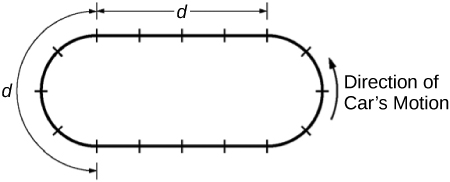
The figure above represents a racetrack with semicircular sections connected by straight sections. Each section has length d, and markers along the track are spaced d/4 apart. Two people drive cars counterclockwise around the track, as shown. Car X goes around the curves at constant speed vc, increases speed at constant acceleration for half of each straight section to reach a maximum speed of 2vc, then brakes at constant acceleration for the other half of each straight section to return to speed vc. Car Y also goes around the curves at constant speed vc, increases its speed at constant acceleration for one-fourth of each straight section to reach the same maximum speed 2vc, stays at that speed for half of each straight section, then brakes at constant acceleration for the remaining fourth of each straight section to return to speed vc.
\(a\) On the figures below, draw an arrow showing the direction of the net force on each of the cars at the positions noted by the dots. If the net force is zero at any position, label the dot with 0.
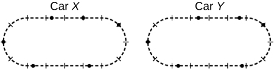
The position of the six dots on the Car Y track on the right are as follows:
- The first dot on the left center of the track is at the same position as it is on the Car X track.
- The second dot is just slight to the right of the Car X dot (less than a dash) past three perpendicular hash marks moving to the right.
- The third dot is about one and two-thirds perpendicular hash marks to the right of the center top perpendicular has mark.
- The fourth dot is in the same position as the Car X figure (one perpendicular hash mark above the center right perpendicular hash mark).
- The fifth dot is about one and two-third perpendicular hash marks to the right of the center bottom perpendicular hash mark.
- The sixth dot is in the same position as the Car Y dot (one and two third perpendicular hash marks to the left of the center bottom hash mark).
\(b\)
i. Indicate which car, if either, completes one trip around the track in less time, and justify your answer qualitatively without using equations.
ii. Justify your answer about which car, if either, completes one trip around the track in less time quantitatively with appropriate equations.
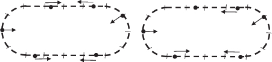
Car X is shown on the left, and Car Y is shown on the right.
i.
Car X takes longer to accelerate and does not spend any time traveling at top speed. Car Y accelerates over a shorter time and spends time going at top speed. So Car Y must cover the straightaways in a shorter time. Curves take the same time, so Car Y must overall take a shorter time.
ii.
The only difference in the calculations for the time of one segment of linear acceleration is the difference in distances. That shows that Car X takes longer to accelerate. The equation \(\frac{d}{4v_{c}} = t_{c}\) corresponds to Car Y traveling for a time at top speed.
Substituting \(a = \frac{v_{c}}{t_{1}}\) into the displacement equation in part (b) ii gives \(D = \frac{3}{2}v_{c}t_{1}\). This shows that a car takes less time to reach its maximum speed when it accelerates over a shorter distance. Therefore, Car Y reaches its maximum speed more quickly, and spends more time at its maximum speed than Car X does, as argued in part (b) i.
Which of the following is an example of a body exerting a force on itself?
- a person standing up from a seated position
- a car accelerating while driving
- both of the above
- none of the above
A hawk accelerates as it glides in the air. Does the force causing the acceleration come from the hawk itself? Explain.
A body cannot exert a force on itself. The hawk may accelerate as a result of several forces. The hawk may accelerate toward Earth as a result of the force due to gravity. The hawk may accelerate as a result of the additional force exerted on it by wind. The hawk may accelerate as a result of orienting its body to create less air resistance, thus increasing the net force forward.
What causes the force that moves a boat forward when someone rows it?
- The force is caused by the rower’s arms.
- The force is caused by an interaction between the oars and gravity.
- The force is caused by an interaction between the oars and the water the boat is traveling in.
- The force is caused by friction.
4.2.3 Section Summary
- Dynamics is the study of how forces affect the motion of objects.
- Force is a push or pull that can be defined in terms of various standards, and it is a vector having both magnitude and direction.
- External forces are any outside forces that act on a body. A free-body diagram is a drawing of all external forces acting on a body.
4.2.4 Conceptual Questions
Propose a force standard different from the example of a stretched spring discussed in the text. Your standard must be capable of producing the same force repeatedly.
What properties do forces have that allow us to classify them as vectors?
4.2.5 Glossary
- dynamics
- the study of how forces affect the motion of objects and systems
- external force
- a force acting on an object or system that originates outside of the object or system
- free-body diagram
- a sketch showing all of the external forces acting on an object or system; the system is represented by a dot, and the forces are represented by vectors extending outward from the dot
- force
- a push or pull on an object with a specific magnitude and direction; can be represented by vectors; can be expressed as a multiple of a standard force
4.3 Newton's First Law of Motion: Inertia
4.3.1 Learning Objectives
By the end of this section, you will be able to:
- Define mass and inertia.
- Understand Newton's first law of motion.
Experience suggests that an object at rest will remain at rest if left alone, and that an object in motion tends to slow down and stop unless some effort is made to keep it moving. What Newton’s first law of motion states, however, is the following:
Newton’s First Law of Motion
There exists an inertial frame of reference such that a body at rest remains at rest, or, if in motion, remains in motion at a constant velocity unless acted on by a net external force.
Note the repeated use of the verb “remains.” We can think of this law as preserving the status quo of motion.
The first law of motion postulates the existence of at least one frame of reference which we call an inertial reference frame, relative to which the motion of an object not subject to forces is a straight line at a constant speed. An inertial reference frame is any reference frame that is not itself accelerating. A car traveling at constant velocity is an inertial reference frame. A car slowing down for a stoplight, or speeding up after the light turns green, will be accelerating and is not an inertial reference frame. Finally, when the car goes around a turn, which is due to an acceleration changing the direction of the velocity vector, it is not an inertial reference frame. Note that Newton’s laws of motion are only valid for inertial reference frames.
Rather than contradicting our experience, Newton’s first law of motion states that there must be a cause (which is a net external force) for there to be any change in velocity (either a change in magnitude or direction) in an inertial reference frame. We will define net external force in the next section. An object sliding across a table or floor slows down due to the net force of friction acting on the object. If friction disappeared, would the object still slow down?
The idea of cause and effect is crucial in accurately describing what happens in various situations. For example, consider what happens to an object sliding along a rough horizontal surface. The object quickly grinds to a halt. If we spray the surface with talcum powder to make the surface smoother, the object slides farther. If we make the surface even smoother by rubbing lubricating oil on it, the object slides farther yet. Extrapolating to a frictionless surface, we can imagine the object sliding in a straight line indefinitely. Friction is thus the cause of the slowing (consistent with Newton’s first law). The object would not slow down at all if friction were completely eliminated. Consider an air hockey table. When the air is turned off, the puck slides only a short distance before friction slows it to a stop. However, when the air is turned on, it creates a nearly frictionless surface, and the puck glides long distances without slowing down. Additionally, if we know enough about the friction, we can accurately predict how quickly the object will slow down. Friction is an external force.
Newton’s first law is completely general and can be applied to anything from an object sliding on a table to a satellite in orbit to blood pumped from the heart. Experiments have thoroughly verified that any change in velocity (speed or direction) must be caused by an external force. The idea of generally applicable or universal laws is important not only here—it is a basic feature of all laws of physics. Identifying these laws is like recognizing patterns in nature from which further patterns can be discovered. The genius of Galileo, who first developed the idea for the first law, and Newton, who clarified it, was to ask the fundamental question, “What is the cause?” Thinking in terms of cause and effect is a worldview fundamentally different from the typical ancient Greek approach when questions such as “Why does a tiger have stripes?” would have been answered in Aristotelian fashion, “That is the nature of the beast.” True perhaps, but not a useful insight.
4.3.2 Mass
The property of a body to remain at rest or to remain in motion with constant velocity is called inertia. Newton’s first law is often called the law of inertia. As we know from experience, some objects have more inertia than others. It is obviously more difficult to change the motion of a large boulder than that of a basketball, for example. The inertia of an object is measured by its mass.
An object with a small mass will exhibit less inertia and be more affected by other objects. An object with a large mass will exhibit greater inertia and be less affected by other objects. This inertial mass of an object is a measure of how difficult it is to alter the uniform motion of the object by an external force.
Roughly speaking, mass is a measure of the amount of “stuff” (or matter) in something. The quantity or amount of matter in an object is determined by the numbers of atoms and molecules of various types it contains. Unlike weight, mass does not vary with location. The mass of an object is the same on Earth, in orbit, or on the surface of the Moon. In practice, it is very difficult to count and identify all of the atoms and molecules in an object, so masses are not often determined in this manner. Operationally, the masses of objects are determined by comparison with the standard kilogram.
Check Your Understanding
Which has more mass: a kilogram of cotton balls or a kilogram of gold?
They are equal. A kilogram of one substance is equal in mass to a kilogram of another substance. The quantities that might differ between them are volume and density.
4.3.3 Section Summary
- Newton’s first law of motion states that in an inertial frame of reference a body at rest remains at rest, or, if in motion, remains in motion at a constant velocity unless acted on by a net external force. This is also known as the law of inertia.
- Inertia is the tendency of an object to remain at rest or remain in motion. Inertia is related to an object’s mass.
- Mass is the quantity of matter in a substance.
4.3.4 Conceptual Questions
How are inertia and mass related?
What is the relationship between weight and mass? Which is an intrinsic, unchanging property of a body?
4.3.5 Glossary
- inertia
- the tendency of an object to remain at rest or remain in motion
- law of inertia
- see Newton’s first law of motion
- mass
- the quantity of matter in a substance; measured in kilograms
- Newton’s first law of motion
- in an inertial frame of reference, a body at rest remains at rest, or, if in motion, remains in motion at a constant velocity unless acted on by a net external force; also known as the law of inertia
4.4 Newton's Second Law of Motion: Concept of a System
4.4.1 Learning Objectives
By the end of this section, you will be able to:
- Define net force, external force, and system.
- Understand Newton’s second law of motion.
- Apply Newton’s second law to determine the weight of an object.
Newton’s second law of motion is closely related to Newton’s first law of motion. It mathematically states the cause and effect relationship between force and changes in motion. Newton’s second law of motion is more quantitative and is used extensively to calculate what happens in situations involving a force. Before we can write down Newton’s second law as a simple equation giving the exact relationship of force, mass, and acceleration, we need to sharpen some ideas that have already been mentioned.
First, what do we mean by a change in motion? The answer is that a change in motion is equivalent to a change in velocity. A change in velocity means, by definition, that there is an acceleration. Newton’s first law says that a net external force causes a change in motion; thus, we see that a net external force causes acceleration.
Another question immediately arises. What do we mean by an external force? An intuitive notion of external is correct—an external force acts from outside the system of interest. For example, in link(a) the system of interest is the wagon plus the child in it. The two forces exerted by the other children are external forces. An internal force acts between elements of the system. Again looking at link(a), the force the child in the wagon exerts to hang onto the wagon is an internal force between elements of the system of interest. Only external forces affect the motion of a system, according to Newton’s first law. (The internal forces actually cancel, as we shall see in the next section.) You must define the boundaries of the system before you can determine which forces are external. Sometimes the system is obvious, whereas other times identifying the boundaries of a system is more subtle. The concept of a system is fundamental to many areas of physics, as is the correct application of Newton’s laws. This concept will be revisited many times on our journey through physics.
When we describe the acceleration of a system, we are modeling the system as a single point which contains all of the mass of that system. The point we choose for this is the point about which the system’s mass is evenly distributed. For example, in a rigid object, this center of mass is the point where the object will stay balanced even if only supported at this point. For a sphere or disk made of homogenous material, this point is of course at the center. Similarly, for a rod made of homogenous material, the center of mass will be at the midpoint.
For the rider in the wagon in Figure 4.5, the center of mass is probably between the rider’s hips. Due to internal forces, the rider’s hand or hair may accelerate slightly differently, but it is the acceleration of the system’s center of mass that interests us. This is true whether the system is a vehicle carrying passengers, a bowl of grapes, or a planet. When we draw a free-body diagram of a system, we represent the system’s center of mass with a single point and use vectors to indicate the forces exerted on that center of mass. (See Figure 4.5.)

Different forces exerted on the same mass produce different accelerations. (a) Two children push a wagon with a child in it. Arrows representing all external forces are shown. The system of interest is the wagon and its rider. The weight \(\textbf{w}{}\) of the system and the support of the ground \(\textbf{N}{}\) are also shown for completeness and are assumed to cancel. The vector \(\textbf{f}{}\) represents the friction acting on the wagon, and it acts to the left, opposing the motion of the wagon. (b) All of the external forces acting on the system add together to produce a net force, \(\textbf{F}_{\text{net}}{}\). The free-body diagram shows all of the forces acting on the system of interest. The dot represents the center of mass of the system. Each force vector extends from this dot. Because there are two forces acting to the right, we draw the vectors collinearly. (c) A larger net external force produces a larger acceleration (\(\textbf{a'} > \textbf{a}\)) when an adult pushes the child.
Now, it seems reasonable that acceleration should be directly proportional to and in the same direction as the net (total) external force acting on a system. This assumption has been verified experimentally and is illustrated in link. In part (a), a smaller force causes a smaller acceleration than the larger force illustrated in part (c). For completeness, the vertical forces are also shown; they are assumed to cancel since there is no acceleration in the vertical direction. The vertical forces are the weight \(\textbf{w}{}\) and the support of the ground \(\textbf{N}{}\), and the horizontal force \(\textbf{f}{}\) represents the force of friction. These will be discussed in more detail in later sections. For now, we will define friction as a force that opposes the motion past each other of objects that are touching. link(b) shows how vectors representing the external forces add together to produce a net force, \(\textbf{F}_{\text{net}}{}\).
To obtain an equation for Newton’s second law, we first write the relationship of acceleration and net external force as the proportionality
\[{\textbf{a}{\propto}\textbf{F}_{\text{net}},}{}\]
where the symbol \(\propto\) means “proportional to,” and \(\textbf{F}_{\text{net}}{}\) is the net external force. (The net external force is the vector sum of all external forces and can be determined graphically, using the head-to-tail method, or analytically, using components. The techniques are the same as for the addition of other vectors, and are covered in Two-Dimensional Kinematics.) This proportionality states what we have said in words—acceleration is directly proportional to the net external force. Once the system of interest is chosen, it is important to identify the external forces and ignore the internal ones. It is a tremendous simplification not to have to consider the numerous internal forces acting between objects within the system, such as muscular forces within the child’s body, let alone the myriad of forces between atoms in the objects, but by doing so, we can easily solve some very complex problems with only minimal error due to our simplification
Now, it also seems reasonable that acceleration should be inversely proportional to the mass of the system. In other words, the larger the mass (the inertia), the smaller the acceleration produced by a given force. And indeed, as illustrated in link, the same net external force applied to a car produces a much smaller acceleration than when applied to a basketball. The proportionality is written as
\[{\textbf{a}{\propto}\frac{1}{m}}{}\]
where \(m{}\) is the mass of the system. Experiments have shown that acceleration is exactly inversely proportional to mass, just as it is exactly linearly proportional to the net external force.

The same force exerted on systems of different masses produces different accelerations. (a) A basketball player pushes on a basketball to make a pass. (The effect of gravity on the ball is ignored.) (b) The same player exerts an identical force on a stalled SUV and produces a far smaller acceleration (even if friction is negligible). (c) The free-body diagrams are identical, permitting direct comparison of the two situations. A series of patterns for the free-body diagram will emerge as you do more problems.
Both of these proportionalities have been experimentally verified repeatedly and consistently, for a broad range of systems and scales. Thus, it has been experimentally found that the acceleration of an object depends only on the net external force and the mass of the object. Combining the two proportionalities just given yields Newton's second law of motion.
Applying the Science Practices: Testing the Relationship Between Mass, Acceleration, and Force
Plan three simple experiments using objects you have at home to test relationships between mass, acceleration, and force.
\(a\) Design an experiment to test the relationship between mass and acceleration. What will be the independent variable in your experiment? What will be the dependent variable? What controls will you put in place to ensure force is constant?
\(b\) Design a similar experiment to test the relationship between mass and force. What will be the independent variable in your experiment? What will be the dependent variable? What controls will you put in place to ensure acceleration is constant?
\(c\) Design a similar experiment to test the relationship between force and acceleration. What will be the independent variable in your experiment? What will be the dependent variable? Will you have any trouble ensuring that the mass is constant?
What did you learn?
Newton’s Second Law of Motion
The acceleration of a system is directly proportional to and in the same direction as the net external force acting on the system, and inversely proportional to its mass.
In equation form, Newton’s second law of motion is
\[{\textbf{a} = \frac{\textbf{F}_{\text{net}}}{m}}.\]
This is often written in the more familiar form
\[{\textbf{F}_{\text{net}} = m\textbf{a}}.\]
When only the magnitude of force and acceleration are considered, this equation is simply
\[{F_{\text{net}} = \text{ma}}.{}\]
Although these last two equations are really the same, the first gives more insight into what Newton’s second law means. The law is a cause and effect relationship among three quantities that is not simply based on their definitions. The validity of the second law is completely based on experimental verification.
Applying the Science Practices: Systems and Free-Body Diagrams
First, consider a person on a sled sliding downhill. What is the system in this situation? Try to draw a free-body diagram describing this system, labeling all the forces and their directions. Which of the forces are internal? Which are external?
Next, consider a person on a sled being pushed along level ground by a friend. What is the system in this situation? Try to draw a free-body diagram describing this system, labelling all the forces and their directions. Which of the forces are internal? Which are external?
4.4.2 Units of Force
\({\textbf{F}_{\text{net}} = m\textbf{a}}{}\) is used to define the units of force in terms of the three basic units for mass, length, and time. The SI unit of force is called the newton (abbreviated N) and is the force needed to accelerate a 1-kg system at the rate of \({1\text{m/s}^{2}}{}\). That is, since \({\textbf{F}_{\text{net}} = m\textbf{a}}{}\),
\[{\text{1\ N} = {\text{1\ kg} \cdot \text{m/s}^{2}}}.\]
While almost the entire world uses the newton for the unit of force, in the United States the most familiar unit of force is the pound (lb), where 1 N = 0.225 lb.
4.4.3 Weight and the Gravitational Force
When an object is dropped, it accelerates toward the center of Earth. Newton’s second law states that a net force on an object is responsible for its acceleration. If air resistance is negligible, the net force on a falling object is the gravitational force, commonly called its weight \(\textbf{w}{}\). Weight can be denoted as a vector \(\textbf{w}{}\) because it has a direction; down is, by definition, the direction of gravity, and hence weight is a downward force. The magnitude of weight is denoted as \(w{}\). Galileo was instrumental in showing that, in the absence of air resistance, all objects fall with the same acceleration \(g{}\). Using Galileo’s result and Newton’s second law, we can derive an equation for weight.
Consider an object with mass \(m{}\) falling downward toward Earth. It experiences only the downward force of gravity, which has magnitude \(w{}\). Newton’s second law states that the magnitude of the net external force on an object is \({F_{\text{net}} = \text{ma}}{}\).
Since the object experiences only the downward force of gravity, \({F_{\text{net}} = w}{}\). We know that the acceleration of an object due to gravity is \(g{}\), or \({a = g}{}\). Substituting these into Newton’s second law gives
Weight
This is the equation for weight—the gravitational force on a mass \(m{}\):
\[{w = \text{mg}}.\]
Since \({{g =}9.80\ \text{m/s}^{2}}{}\) on Earth, the weight of a 1.0 kg object on Earth is 9.8 N, as we see:
\[{{{w = \text{mg}} = (}1\text{.}\text{0\ kg})(9.80\ \text{m/s}^{2}{) = 9.8}\ \text{N}}.\]
Recall that \(g{}\) can take a positive or negative value, depending on the positive direction in the coordinate system. Be sure to take this into consideration when solving problems with weight.
When the net external force on an object is its weight, we say that it is in free-fall. That is, the only force acting on the object is the force of gravity. In the real world, when objects fall downward toward Earth, they are never truly in free-fall because there is always some upward force from the air acting on the object.
The acceleration due to gravity \(g{}\) varies slightly over the surface of Earth, so that the weight of an object depends on location and is not an intrinsic property of the object. Weight varies dramatically if one leaves Earth’s surface. On the Moon, for example, the acceleration due to gravity is only \({1.67\ \text{m/s}^{2}}{}\). A 1.0-kg mass thus has a weight of 9.8 N on Earth and only about 1.7 N on the Moon.
The broadest definition of weight in this sense is that the weight of an object is the gravitational force on it from the nearest large body, such as Earth, the Moon, the Sun, and so on. This is the most common and useful definition of weight in physics. It differs dramatically, however, from the definition of weight used by NASA and the popular media in relation to space travel and exploration. When they speak of “weightlessness” and “microgravity,” they are really referring to the phenomenon we call “free-fall” in physics. We shall use the above definition of weight, and we will make careful distinctions between free-fall and actual weightlessness.
It is important to be aware that weight and mass are very different physical quantities, although they are closely related. Mass is the quantity of matter (how much “stuff”) and does not vary in classical physics, whereas weight is the gravitational force and does vary depending on gravity. It is tempting to equate the two, since most of our examples take place on Earth, where the weight of an object only varies a little with the location of the object. Furthermore, the terms mass and weight are used interchangeably in everyday language; for example, our medical records often show our “weight” in kilograms, but never in the correct units of newtons.
Common Misconceptions: Mass vs. Weight
Mass and weight are often used interchangeably in everyday language. However, in science, these terms are distinctly different from one another. Mass is a measure of how much matter is in an object. The typical measure of mass is the kilogram (or the “slug” in English units). Weight, on the other hand, is a measure of the force of gravity acting on an object. Weight is equal to the mass of an object (\(m{}\)) multiplied by the acceleration due to gravity (\(g{}\)). Like any other force, weight is measured in terms of newtons (or pounds in English units).
Assuming the mass of an object is kept intact, it will remain the same, regardless of its location. However, because weight depends on the acceleration due to gravity, the weight of an object can change when the object enters into a region with stronger or weaker gravity. For example, the acceleration due to gravity on the Moon is \({1.67\ \text{m/s}^{2}}{}\) (which is much less than the acceleration due to gravity on Earth, \({9.80\ \text{m/s}^{2}}{}\)). If you measured your weight on Earth and then measured your weight on the Moon, you would find that you “weigh” much less, even though you do not look any skinnier. This is because the force of gravity is weaker on the Moon. In fact, when people say that they are “losing weight,” they really mean that they are losing “mass” (which in turn causes them to weigh less).
Take-Home Experiment: Mass and Weight
What do bathroom scales measure? When you stand on a bathroom scale, what happens to the scale? It depresses slightly. The scale contains springs that compress in proportion to your weight—similar to rubber bands expanding when pulled. The springs provide a measure of your weight (for an object which is not accelerating). This is a force in newtons (or pounds). In most countries, the measurement is divided by 9.80 to give a reading in mass units of kilograms. The scale measures weight but is calibrated to provide information about mass. While standing on a bathroom scale, push down on a table next to you. What happens to the reading? Why? Would your scale measure the same “mass” on Earth as on the Moon?
What Acceleration Can a Person Produce when Pushing a Lawn Mower?
Suppose that the net external force (push minus friction) exerted on a lawn mower is 51 N (about 11 lb) parallel to the ground. The mass of the mower is 24 kg. What is its acceleration?

The net force on a lawn mower is 51 N to the right. At what rate does the lawn mower accelerate to the right?
Strategy
Since \(\textbf{F}_{\text{net}}{}\) and \(m{}\) are given, the acceleration can be calculated directly from Newton’s second law as stated in \({\textbf{F}_{\text{net}} = m\textbf{a}}{}\).
Solution
The magnitude of the acceleration \(a{}\) is \({a = \frac{F_{\text{net}}}{m}}{}\). Entering known values gives
\[{a = \frac{\text{51\ N}}{\text{24\ kg}}}{}\]
Substituting the units \({\text{kg} \cdot \text{m/s}^{2}}{}\) for N yields
\[{{{a = \frac{\text{51\ kg} \cdot \text{m/s}^{2}}{\text{24\ kg}}} =}\text{2.1\ m}\text{/s}^{2}}.\]
Discussion
The direction of the acceleration is the same direction as that of the net force, which is parallel to the ground. There is no information given in this example about the individual external forces acting on the system, but we can say something about their relative magnitudes. For example, the force exerted by the person pushing the mower must be greater than the friction opposing the motion (since we know the mower moves forward), and the vertical forces must cancel if there is to be no acceleration in the vertical direction (the mower is moving only horizontally). The acceleration found is small enough to be reasonable for a person pushing a mower. Such an effort would not last too long because the person’s top speed would soon be reached.
What Rocket Thrust Accelerates This Sled?
Prior to manned space flights, rocket sleds were used to test aircraft, missile equipment, and physiological effects on human subjects at high speeds. They consisted of a platform that was mounted on one or two rails and propelled by several rockets. Calculate the magnitude of force exerted by each rocket, called its thrust \(\textbf{T}{}\), for the four-rocket propulsion system shown in link. The sled’s initial acceleration is \({{\text{49}\ \text{m/s}^{2}},}{}\) the mass of the system is 2100 kg, and the force of friction opposing the motion is known to be 650 N.
A sled experiences a rocket thrust that accelerates it to the right. Each rocket creates an identical thrust \(\textbf{T}{}\). As in other situations where there is only horizontal acceleration, the vertical forces cancel. The ground exerts an upward force \(\textbf{N}{}\) on the system that is equal in magnitude and opposite in direction to its weight, \(\textbf{w}{}\). The system here is the sled, its rockets, and rider, so none of the forces between these objects are considered. The arrow representing friction (\(\textbf{f}{}\)) is drawn larger than scale.
Strategy
Although there are forces acting vertically and horizontally, we assume the vertical forces cancel since there is no vertical acceleration. This leaves us with only horizontal forces and a simpler one-dimensional problem. Directions are indicated with plus or minus signs, with right taken as the positive direction. See the free-body diagram in the figure.
Solution
Since acceleration, mass, and the force of friction are given, we start with Newton’s second law and look for ways to find the thrust of the engines. Since we have defined the direction of the force and acceleration as acting “to the right,” we need to consider only the magnitudes of these quantities in the calculations. Hence we begin with
\[{F_{\text{net}} = \text{ma}},\]
where \(F_{\text{net}}{}\) is the net force along the horizontal direction. We can see from link that the engine thrusts add, while friction opposes the thrust. In equation form, the net external force is
\[{F_{\text{net}} = {4T - f}}.\]
Substituting this into Newton’s second law gives
\[{{F_{\text{net}} = \text{ma}} = {4T - f}}.\]
Using a little algebra, we solve for the total thrust 4T:
\[{4T = {\text{ma} + f}}.\]
Substituting known values yields
\[{{{4T = {\text{ma} + f}} = (}\text{2100\ kg})(\text{49\ m/s}^{2}{) + \text{650\ N}}}.\]
So the total thrust is
\[{{4T = 1.0}{\times \text{10}^{5}}\ \text{N}},\]
and the individual thrusts are
\[{{{T = \frac{1.0{\times \text{10}^{5}}\ \text{N}}{4}} = 2.6 \times \text{10}^{4}}\ \text{N}}.\]
Discussion
The numbers are quite large, so the result might surprise you. Experiments such as this were performed in the early 1960s to test the limits of human endurance and the setup designed to protect human subjects in jet fighter emergency ejections. Speeds of 1000 km/h were obtained, with accelerations of 45 \(g{}\)'s. (Recall that \(g{}\), the acceleration due to gravity, is \({9\text{.}\text{80\ m/s}^{2}}{}\). When we say that an acceleration is 45 \(g{}\)'s, it is \({\text{45}\times 9\text{.}\text{80\ m/s}^{2}}{}\), which is approximately \(\text{440\ m/s}^{2}{}\).) While living subjects are not used any more, land speeds of 10,000 km/h have been obtained with rocket sleds. In this example, as in the preceding one, the system of interest is obvious. We will see in later examples that choosing the system of interest is crucial—and the choice is not always obvious.
Newton’s second law of motion is more than a definition; it is a relationship among acceleration, force, and mass. It can help us make predictions. Each of those physical quantities can be defined independently, so the second law tells us something basic and universal about nature. The next section introduces the third and final law of motion.
Applying the Science Practices: Sums of Forces
Recall that forces are vector quantities, and therefore the net force acting on a system should be the vector sum of the forces.
\(a\) Design an experiment to test this hypothesis. What sort of a system would be appropriate and convenient to have multiple forces applied to it? What features of the system should be held constant? What could be varied? Can forces be arranged in multiple directions so that, while the hypothesis is still tested, the resulting calculations are not too inconvenient?
\(b\) Another group of students has done such an experiment, using a motion capture system looking down at an air hockey table to measure the motion of the 0.10-kg puck. The table was aligned with the cardinal directions, and a compressed air hose was placed in the center of each side, capable of varying levels of force output and fixed so that it was aimed at the center of the table.
| Forces | Measured acceleration (magnitudes) |
|---|---|
| 3 N north, 4 N west | 48 ± 4 m/s2 |
| 5 N south, 12 N east | 132 ± 6 m/s2 |
| 6 N north, 12 N east, 4 N west | 99 ± 3 m/s2 |
Given the data in the table, is the hypothesis confirmed? What were the directions of the accelerations?
4.4.3.1 Section Summary
Acceleration, \(\textbf{a}{}\), is defined as a change in velocity, meaning a change in its magnitude or direction, or both.
An external force is one acting on a system from outside the system, as opposed to internal forces, which act between components within the system.
Newton’s second law of motion states that the acceleration of a system is directly proportional to and in the same direction as the net external force acting on the system, and inversely proportional to its mass.
In equation form, Newton’s second law of motion is \({\textbf{a} = \frac{\textbf{F}_{\text{net}}}{m}}{}\).
This is often written in the more familiar form: \({\textbf{F}_{\text{net}} = m\textbf{a}}{}\).
The weight \(\textbf{w}{}\) of an object is defined as the force of gravity acting on an object of mass \(m{}\). The object experiences an acceleration due to gravity \(\textbf{g}{}\): ::: {#eip-id1171442332762 data-type=“equation”} \[{\textbf{w} = m\textbf{g}}.\]
:::
If the only force acting on an object is due to gravity, the object is in free fall.
Friction is a force that opposes the motion past each other of objects that are touching.
4.4.3.2 Conceptual Questions
Which statement is correct? (a) Net force causes motion. (b) Net force causes change in motion. Explain your answer and give an example.
Why can we neglect forces such as those holding a body together when we apply Newton’s second law of motion?
Explain how the choice of the “system of interest” affects which forces must be considered when applying Newton’s second law of motion.
Describe a situation in which the net external force on a system is not zero, yet its speed remains constant.
A system can have a nonzero velocity while the net external force on it is zero. Describe such a situation.
A rock is thrown straight up. What is the net external force acting on the rock when it is at the top of its trajectory?
\(a\) Give an example of different net external forces acting on the same system to produce different accelerations. (b) Give an example of the same net external force acting on systems of different masses, producing different accelerations. (c) What law accurately describes both effects? State it in words and as an equation.
If the acceleration of a system is zero, are no external forces acting on it? What about internal forces? Explain your answers.
If a constant, nonzero force is applied to an object, what can you say about the velocity and acceleration of the object?
The gravitational force on the basketball in link is ignored. When gravity is taken into account, what is the direction of the net external force on the basketball—above horizontal, below horizontal, or still horizontal?
4.4.3.3 Problem Exercises
You may assume data taken from illustrations is accurate to three digits.
A 63.0-kg sprinter starts a race with an acceleration of \({4\text{.}\text{20\ m}\text{/s}^{2}}{}\). What is the net external force on him?
265 N
If the sprinter from the previous problem accelerates at that rate for 20 m, and then maintains that velocity for the remainder of the 100-m dash, what will be his time for the race?
A cleaner pushes a 4.50-kg laundry cart in such a way that the net external force on it is 60.0 N. Calculate the magnitude of its acceleration.
\(\text{13.3\ m/s}^{2}\)
Since astronauts in orbit are apparently weightless, a clever method of measuring their masses is needed to monitor their mass gains or losses to adjust diets. One way to do this is to exert a known force on an astronaut and measure the acceleration produced. Suppose a net external force of 50.0 N is exerted and the astronaut’s acceleration is measured to be \({0\text{.}\text{893\ m/s}^{2}}{}\). (a) Calculate her mass. (b) By exerting a force on the astronaut, the vehicle in which they orbit experiences an equal and opposite force. Discuss how this would affect the measurement of the astronaut’s acceleration. Propose a method in which recoil of the vehicle is avoided.
In link, the net external force on the 24-kg mower is stated to be 51 N. If the force of friction opposing the motion is 24 N, what force \(F{}\) (in newtons) is the person exerting on the mower? Suppose the mower is moving at 1.5 m/s when the force \(F{}\) is removed. How far will the mower go before stopping?
The same rocket sled drawn in link is decelerated at a rate of \({1\text{96\ m/s}^{2}}{}\). What force is necessary to produce this deceleration? Assume that the rockets are off. The mass of the system is 2100 kg.
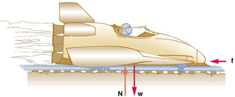
\(a\) If the rocket sled shown in link starts with only one rocket burning, what is the magnitude of its acceleration? Assume that the mass of the system is 2100 kg, the thrust T is \(2.4 \times 10^{4}\) N, and the force of friction opposing the motion is known to be 650 N. (b) Why is the acceleration not one-fourth of what it is with all rockets burning?
\(a\) \(12\ \text{m/s}^{2}\).
\(b\) The acceleration is not one-fourth of what it was with all rockets burning because the frictional force is still as large as it was with all rockets burning.
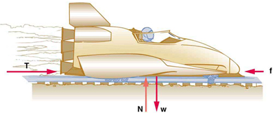
What is the deceleration of the rocket sled if it comes to rest in 1.1 s from a speed of 1000 km/h? (Such deceleration caused one test subject to black out and have temporary blindness.)
Suppose two children push horizontally, but in exactly opposite directions, on a third child in a wagon. The first child exerts a force of 75.0 N, the second a force of 90.0 N, friction is 12.0 N, and the mass of the third child plus wagon is 23.0 kg. (a) What is the system of interest if the acceleration of the child in the wagon is to be calculated? (b) Draw a free-body diagram, including all forces acting on the system. (c) Calculate the acceleration. (d) What would the acceleration be if friction were 15.0 N?
\(a\) The system is the child in the wagon plus the wagon.
(b
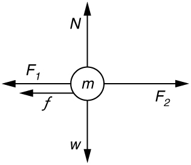
\(c\) \({{a = 0}\text{.}\text{130}\ \text{m/s}^{2}}{}\) in the direction of the second child’s push.
\(d\) \({{a = 0.00\ }\text{m/s}^{2}}{}\)
A powerful motorcycle can produce an acceleration of \({3.50\ \text{m/s}^{2}}{}\) while traveling at 90.0 km/h. At that speed the forces resisting motion, including friction and air resistance, total 400 N. (Air resistance is analogous to air friction. It always opposes the motion of an object.) What is the magnitude of the force the motorcycle exerts backward on the ground to produce its acceleration if the mass of the motorcycle with rider is 245 kg?
The rocket sled shown in link accelerates at a rate of \({49.0\ \text{m/s}^{2}}{}\). Its passenger has a mass of 75.0 kg. (a) Calculate the horizontal component of the force the seat exerts against his body. Compare this with his weight by using a ratio. (b) Calculate the direction and magnitude of the total force the seat exerts against his body.
\(a\) \(3.68 \times 10^{3}\ \text{N}\) . This force is 5.00 times greater than his weight.
\(b\) \({\text{3750\ N;\ 11.3º}\ \text{above\ horizontal}}{}\)
Repeat the previous problem for the situation in which the rocket sled decelerates at a rate of \({2\text{01\ m/s}^{2}}{}\). In this problem, the forces are exerted by the seat and restraining belts.
The weight of an astronaut plus his space suit on the Moon is only 250 N. How much do they weigh on Earth? What is the mass on the Moon? On Earth?
\(1.5 \times 10^{3}\ \text{N},\text{150\ kg},\text{150\ kg}\)
Suppose the mass of a fully loaded module in which astronauts take off from the Moon is 10,000 kg. The thrust of its engines is 30,000 N. (a) Calculate its the magnitude of acceleration in a vertical takeoff from the Moon. (b) Could it lift off from Earth? If not, why not? If it could, calculate the magnitude of its acceleration.
4.4.4 Glossary
- acceleration
- the rate at which an object’s velocity changes over a period of time
- free-fall
- a situation in which the only force acting on an object is the force due to gravity
- friction
- a force past each other of objects that are touching; examples include rough surfaces and air resistance
- net external force
- the vector sum of all external forces acting on an object or system; causes a mass to accelerate
- Newton’s second law of motion
- the net external force \(\textbf{F}_{\text{net}}{}\) on an object with mass \(m{}\) is proportional to and in the same direction as the acceleration of the object, \(\textbf{a}{}\), and inversely proportional to the mass; defined mathematically as \(\textbf{a} = \frac{\textbf{F}_{\text{net}}}{m}\)
- system
- defined by the boundaries of an object or collection of objects being observed; all forces originating from outside of the system are considered external forces
- weight
- the force \(\textbf{w}{}\)due to gravity acting on an object of mass \(m{}\); defined mathematically as: \({\textbf{w} = m\textbf{g}}{}\), where \(\textbf{g}{}\) is the magnitude and direction of the acceleration due to gravity
4.5 Newton's Third Law of Motion: Symmetry in Forces
4.5.1 Learning Objectives
By the end of this section, you will be able to:
- Understand Newton's third law of motion.
- Apply Newton's third law to define systems and solve problems of motion.
The information presented in this section supports the following AP® learning objectives and science practices:
- 3.A.2.1 The student is able to represent forces in diagrams or mathematically using appropriately labeled vectors with magnitude, direction, and units during the analysis of a situation. (S.P. 1.1)
- 3.A.3.1 The student is able to analyze a scenario and make claims (develop arguments, justify assertions) about the forces exerted on an object by other objects for different types of forces or components of forces. (S.P. 6.4, 7.2)
- 3.A.3.3 The student is able to describe a force as an interaction between two objects and identify both objects for any force. (S.P. 1.4)
- 3.A.4.1 The student is able to construct explanations of physical situations involving the interaction of bodies using Newton's third law and the representation of action-reaction pairs of forces. (S.P. 1.4, 6.2)
- 3.A.4.2 The student is able to use Newton's third law to make claims and predictions about the action-reaction pairs of forces when two objects interact. (S.P. 6.4, 7.2)
- 3.A.4.3 The student is able to analyze situations involving interactions among several objects by using free-body diagrams that include the application of Newton's third law to identify forces. (S.P. 1.4)
- 3.B.2.1 The student is able to create and use free-body diagrams to analyze physical situations to solve problems with motion qualitatively and quantitatively. (S.P. 1.1, 1.4, 2.2)
- 4.A.2.1 The student is able to make predictions about the motion of a system based on the fact that acceleration is equal to the change in velocity per unit time, and velocity is equal to the change in position per unit time. (S.P. 6.4)
- 4.A.2.2 The student is able to evaluate using given data whether all the forces on a system or whether all the parts of a system have been identified. (S.P. 5.3)
- 4.A.3.1 The student is able to apply Newton's second law to systems to calculate the change in the center-of-mass velocity when an external force is exerted on the system. (S.P. 2.2)
There is a passage in the musical Man of la Mancha that relates to Newton’s third law of motion. Sancho, in describing a fight with his wife to Don Quixote, says, “Of course I hit her back, Your Grace, but she’s a lot harder than me and you know what they say, ‘Whether the stone hits the pitcher or the pitcher hits the stone, it’s going to be bad for the pitcher.’” This is exactly what happens whenever one body exerts a force on another—the first also experiences a force (equal in magnitude and opposite in direction). Numerous common experiences, such as stubbing a toe or throwing a ball, confirm this. It is precisely stated in Newton’s third law of motion.
Newton’s Third Law of Motion
Whenever one body exerts a force on a second body, the first body experiences a force that is equal in magnitude and opposite in direction to the force that it exerts.
This law represents a certain symmetry in nature: Forces always occur in pairs, and one body cannot exert a force on another without experiencing a force itself. We sometimes refer to this law loosely as “action-reaction,” where the force exerted is the action and the force experienced as a consequence is the reaction. Newton’s third law has practical uses in analyzing the origin of forces and understanding which forces are external to a system.
We can readily see Newton’s third law at work by taking a look at how people move about. Consider a swimmer pushing off from the side of a pool, as illustrated in link. She pushes against the pool wall with her feet and accelerates in the direction opposite to that of her push. The wall has exerted an equal and opposite force back on the swimmer. You might think that two equal and opposite forces would cancel, but they do not because they act on different systems. In this case, there are two systems that we could investigate: the swimmer or the wall. If we select the swimmer to be the system of interest, as in the figure, then \(\textbf{F}_{\text{wall\ on\ feet}}{}\) is an external force on this system and affects its motion. The swimmer moves in the direction of \(\textbf{F}_{\text{wall\ on\ feet}}{}\). In contrast, the force \(\textbf{F}_{\text{feet\ on\ wall}}{}\) acts on the wall and not on our system of interest. Thus \(\textbf{F}_{\text{feet\ on\ wall}}{}\) does not directly affect the motion of the system and does not cancel \(\textbf{F}_{\text{wall\ on\ feet}}{}\). Note that the swimmer pushes in the direction opposite to that in which she wishes to move. The reaction to her push is thus in the desired direction.
When the swimmer exerts a force \(\textbf{F}_{\text{feet\ on\ wall}}{}\) on the wall, she accelerates in the direction opposite to that of her push. This means the net external force on her is in the direction opposite to \(\textbf{F}_{\text{feet\ on\ wall}}{}\). This opposition occurs because, in accordance with Newton’s third law of motion, the wall exerts a force \(\textbf{F}_{\text{wall\ on\ feet}}{}\) on her, equal in magnitude but in the direction opposite to the one she exerts on it. The line around the swimmer indicates the system of interest. Note that \(\textbf{F}_{\text{feet\ on\ wall}}{}\) does not act on this system (the swimmer) and, thus, does not cancel \(\textbf{F}_{\text{wall\ on\ feet}}{}\). Thus the free-body diagram shows only \(\textbf{F}_{\text{wall\ on\ feet}}{}\), \(\textbf{w}{}\), the gravitational force, and \(\textbf{BF}{}\), the buoyant force of the water supporting the swimmer’s weight. The vertical forces \(\textbf{w}{}\) and \(\textbf{BF}{}\) cancel since there is no vertical motion.
Similarly, when a person stands on Earth, the Earth exerts a force on the person, pulling the person toward the Earth. As stated by Newton’s third law of motion, the person also exerts a force that is equal in magnitude, but opposite in direction, pulling the Earth up toward the person. Since the mass of the Earth is so great, however, and \(F = ma\), the acceleration of the Earth toward the person is not noticeable.
Other examples of Newton’s third law are easy to find. As a professor paces in front of a whiteboard, she exerts a force backward on the floor. The floor exerts a reaction force forward on the professor that causes her to accelerate forward. Similarly, a car accelerates because the ground pushes forward on the drive wheels in reaction to the drive wheels pushing backward on the ground. You can see evidence of the wheels pushing backward when tires spin on a gravel road and throw rocks backward. In another example, rockets move forward by expelling gas backward at high velocity. This means the rocket exerts a large backward force on the gas in the rocket combustion chamber, and the gas therefore exerts a large reaction force forward on the rocket. This reaction force is called thrust. It is a common misconception that rockets propel themselves by pushing on the ground or on the air behind them. They actually work better in a vacuum, where they can more readily expel the exhaust gases. Helicopters similarly create lift by pushing air down, thereby experiencing an upward reaction force. Birds and airplanes also fly by exerting force on air in a direction opposite to that of whatever force they need. For example, the wings of a bird force air downward and backward in order to get lift and move forward. An octopus propels itself in the water by ejecting water through a funnel from its body, similar to a jet ski. In a situation similar to Sancho’s, professional cage fighters experience reaction forces when they punch, sometimes breaking their hand by hitting an opponent’s body.
Getting Up To Speed: Choosing the Correct System
A physics professor pushes a cart of demonstration equipment to a lecture hall, as seen in link. Her mass is 65.0 kg, the cart’s is 12.0 kg, and the equipment’s is 7.0 kg. Calculate the acceleration produced when the professor exerts a backward force of 150 N on the floor. All forces opposing the motion, such as friction on the cart’s wheels and air resistance, total 24.0 N.
A professor pushes a cart of demonstration equipment. The lengths of the arrows are proportional to the magnitudes of the forces (except for \(\textbf{f}{}\), since it is too small to draw to scale). Different questions are asked in each example; thus, the system of interest must be defined differently for each. System 1 is appropriate for this example, since it asks for the acceleration of the entire group of objects. Only \(\textbf{F}_{\text{floor}}{}\) and \(\textbf{f}{}\) are external forces acting on System 1 along the line of motion. All other forces either cancel or act on the outside world. System 2 is chosen for link so that \(\textbf{F}_{\text{prof}}{}\) will be an external force and enter into Newton’s second law. Note that the free-body diagrams, which allow us to apply Newton’s second law, vary with the system chosen.
Strategy
Since they accelerate as a unit, we define the system to be the professor, cart, and equipment. This is System 1 in link. The professor pushes backward with a force \(\textbf{F}_{\text{foot}}{}\) of 150 N. According to Newton’s third law, the floor exerts a forward reaction force \(\textbf{F}_{\text{floor}}{}\) of 150 N on System 1. Because all motion is horizontal, we can assume there is no net force in the vertical direction. The problem is therefore one-dimensional along the horizontal direction. As noted, \(\textbf{f}{}\) opposes the motion and is thus in the opposite direction of \(\textbf{F}_{\text{floor}}{}\). Note that we do not include the forces \(\textbf{F}_{\text{prof}}{}\) or \(\textbf{F}_{\text{cart}}{}\) because these are internal forces, and we do not include \(\textbf{F}_{\text{foot}}{}\) because it acts on the floor, not on the system. There are no other significant forces acting on System 1. If the net external force can be found from all this information, we can use Newton’s second law to find the acceleration as requested. See the free-body diagram in the figure.
Solution
Newton’s second law is given by
\[{a = \frac{F_{\text{net}}}{m}}.\]
The net external force on System 1 is deduced from link and the discussion above to be
\[{{{F_{\text{net}} = {F_{\text{floor}} - f}} = {\text{150\ N} - \text{24}}}\text{.}{\text{0\ N} = \text{126\ N}}}.\]
The mass of System 1 is
\[{{m = (}\text{65}\text{.}{\text{0} + \text{12}}\text{.}{\text{0} + \text{7}}\text{.}0){\ \text{kg} = \text{84\ kg}}}.\]
These values of \(F_{\text{net}}{}\) and \(m{}\) produce an acceleration of
a = F net m , a = 1 26 N 84 kg = 1 . 5 m/s 2 . a = F net m , a = 1 26 N 84 kg = 1 . 5 m/s 2 . alignl { stack { size 12{a= { {F rSub { size 8{"net"} } } over {m} } ,} {} # a = { {1"26 N"} over {"84"" kg"} } =" 1" "." "5 m/s" rSup { size 8{2} } "." {} } } {}
Discussion
None of the forces between components of System 1, such as between the professor’s hands and the cart, contribute to the net external force because they are internal to System 1. Another way to look at this is to note that forces between components of a system cancel because they are equal in magnitude and opposite in direction. For example, the force exerted by the professor on the cart results in an equal and opposite force back on her. In this case both forces act on the same system and, therefore, cancel. Thus internal forces (between components of a system) cancel. Choosing System 1 was crucial to solving this problem.
Force on the Cart—Choosing a New System
Calculate the force the professor exerts on the cart in link using data from the previous example if needed.
Strategy
If we now define the system of interest to be the cart plus equipment (System 2 in link), then the net external force on System 2 is the force the professor exerts on the cart minus friction. The force she exerts on the cart, \(\textbf{F}_{\text{prof}}{}\), is an external force acting on System 2. \(\textbf{F}_{\text{prof}}{}\) was internal to System 1, but it is external to System 2 and will enter Newton’s second law for System 2.
Solution
Newton’s second law can be used to find \(\textbf{F}_{\text{prof}}{}\). Starting with
\[{a = \frac{F_{\text{net}}}{m}}{}\]
and noting that the magnitude of the net external force on System 2 is
\[{F_{\text{net}} = {F_{\text{prof}} - f}},\]
we solve for \(F_{\text{prof}}{}\), the desired quantity:
\[{F_{\text{prof}} = {F_{\text{net}} + f.}}{}\]
The value of \(f{}\) is given, so we must calculate net \(F_{\text{net}}{}\). That can be done since both the acceleration and mass of System 2 are known. Using Newton’s second law we see that
\[{F_{\text{net}} = \text{ma}},\]
where the mass of System 2 is 19.0 kg (\(m{}\)= 12.0 kg + 7.0 kg) and its acceleration was found to be \({{a = 1.5\ }\text{m/s}^{2}}{}\) in the previous example. Thus,
\[{F_{\text{net}} = \text{ma}},\]
\[{{F_{\text{net}} = (}\text{19}\text{.}\text{0\ kg})(1.5\ \text{m/s}^{2}{) = \text{29\ N}}}.\]
Now we can find the desired force:
\[{F_{\text{prof}} = {F_{\text{net}} + f}},\]
\[{{F_{\text{prof}} = \text{29\ N}}{+ \text{24.0\ N} = \text{53\ N}}}.\]
Discussion
It is interesting that this force is significantly less than the 150-N force the professor exerted backward on the floor. Not all of that 150-N force is transmitted to the cart; some of it accelerates the professor.
The choice of a system is an important analytical step both in solving problems and in thoroughly understanding the physics of the situation (which is not necessarily the same thing).
Gravity Force Lab
Visualize the gravitational force that two objects exert on each other. Change properties of the objects in order to see how it changes the gravity force.
4.5.2 Test Prep for AP Courses
What object or objects commonly exert forces on the following objects in motion? (a) a soccer ball being kicked, (b) a dolphin jumping, (c) a parachutist drifting to Earth.
\(a\) A soccer player, gravity, air, and friction commonly exert forces on a soccer ball being kicked.
\(b\) Gravity and the surrounding water commonly exert forces on a dolphin jumping. (The dolphin moves its muscles to exert a force on the water. The water exerts an equal force on the dolphin, resulting in the dolphin’s motion.)
\(c\) Gravity and air exert forces on a parachutist drifting to Earth.
A ball with a mass of 0.25 kg hits a gym ceiling with a force of 78.0 N. What is the net force on the ball?
- 2.50 N downward
- 75.5 N downward
- 78.0 N downward
- 80.5 N downward
Which of the following is true?
- Earth exerts a force due to gravity on your body, and your body exerts a smaller force on the Earth, because your mass is smaller than the mass of the Earth.
- The Moon orbits the Earth because the Earth exerts a force on the Moon and the Moon exerts a force equal in magnitude and direction on the Earth.
- A rocket taking off exerts a force on the Earth equal to the force the Earth exerts on the rocket.
- An airplane cruising at a constant speed is not affected by gravity.
\(c\)
Stationary skater A pushes stationary skater B, who then accelerates at 5.0 m/s2. Skater A does not move. Since forces act in action-reaction pairs, explain why Skater A did not move?
The current in a river exerts a force of 9.0 N on a balloon floating in the river. A wind exerts a force of 13.0 N on the balloon in the opposite direction. Draw a free-body diagram to show the forces acting on the balloon. Use your free-body diagram to predict the effect on the balloon.
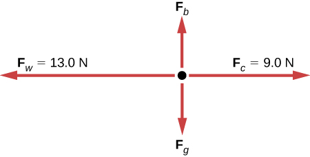
The diagram consists of a black dot in the center and two small red arrows pointing up (Fb) and down (Fg) and two long red arrows pointing right (Fc = 9.0 N) and left (Fw=13.0 N).
In the diagram, Fg represents the force due to gravity on the balloon, and Fb represents the buoyant force. These two forces are equal in magnitude and opposite in direction. Fc represents the force of the current. Fw represents the force of the wind. The net force on the balloon will be \(F_{w} - F_{c} = 4.0\) N and the balloon will accelerate in the direction the wind is blowing.
A force is applied to accelerate an object on a smooth icy surface. When the force stops, which of the following will be true? (Assume zero friction.)
- The object’s acceleration becomes zero.
- The object’s speed becomes zero.
- The object’s acceleration continues to increase at a constant rate.
- The object accelerates, but in the opposite direction.
A parachutist’s fall to Earth is determined by two opposing forces. A gravitational force of 539 N acts on the parachutist. After 2 s, she opens her parachute and experiences an air resistance of 615 N. At what speed is the parachutist falling after 10 s?
Since \(m = F/a\), the parachutist has a mass of \(539\,\text{N/9}\text{.8~km/s}^{\text{2}} = 55\,\text{kg}\).
For the first 2 s, the parachutist accelerates at 9.8 m/s2.
\[\begin{matrix} {v = at} \\ {= 9.8\frac{\text{m}}{\text{s}^{\text{2}}} \bullet 2\text{s}} \\ {= 19.6\quad\frac{\text{m}}{\text{s}}} \\ \end{matrix}\]
Her speed after 2 s is 19.6 m/s.
From 2 s to 10 s, the net force on the parachutist is 539 N – 615 N, or 76 N upward.
\(\begin{matrix} a & = & \frac{F}{m} \\ & = & \frac{- 76\,\text{N}}{55\,\text{kg}} \\ & = & {- 1.4\,\frac{\text{m}}{\text{s}^{2}}} \\ \end{matrix}\)
Since \(v = v_{0} + at\), \(v = 19.6\,\text{m/s}^{\text{2}} + ( - 1.4\,\text{m/s}^{\text{2}})(8\text{s)}\, = 8.4\,\text{m/s}^{\text{2}}\).
At 10 s, the parachutist is falling to Earth at 8.4 m/s.
A flight attendant pushes a cart down the aisle of a plane in flight. In determining the acceleration of the cart relative to the plane, which factor do you not need to consider?
- The friction of the cart’s wheels.
- The force with which the flight attendant’s feet push on the floor.
- The velocity of the plane.
- The mass of the items in the cart.
A landscaper is easing a wheelbarrow full of soil down a hill. Define the system you would analyze and list all the forces that you would need to include to calculate the acceleration of the wheelbarrow.
The system includes the gardener and the wheelbarrow with its contents. The following forces are important to include: the weight of the wheelbarrow, the weight of the gardener, the normal force for the wheelbarrow and the gardener, the force of the gardener pushing against the ground and the equal force of the ground pushing back against the gardener, and any friction in the wheelbarrow’s wheels.
Two water-skiers, with masses of 48 kg and 61 kg, are preparing to be towed behind the same boat. When the boat accelerates, the rope the skiers hold onto accelerates with it and exerts a net force of 290 N on the skiers. At what rate will the skiers accelerate?
- 10.8 m/s2
- 2.7 m/s2
- 6.0 m/s2 and 4.8 m/s2
- 5.3 m/s2
A figure skater has a mass of 40 kg and her partner's mass is 50 kg. She pushes against the ice with a force of 120 N, causing her and her partner to move forward. Calculate the pair’s acceleration. Assume that all forces opposing the motion, such as friction and air resistance, total 5.0 N.
The system undergoing acceleration is the two figure skaters together.
Net force = \(120\,\text{N}\,\text{–}\,\text{5}\text{.0}\,\text{N}\,\text{=}\,\text{115}\,\text{N}\).
Total mass = \(40\,\text{kg~+~50~kg~=~90~kg}\).
Using Newton’s second law, we have that
\(\begin{matrix} a & = & \frac{F}{m} \\ & = & \frac{115\,\text{N}}{90\,\text{kg}} \\ & = & {1.28\,\frac{\text{m}}{\text{s}^{2}}} \\ \end{matrix}\)
The pair accelerates forward at 1.28 m/s2.
4.5.3 Section Summary
- Newton’s third law of motion represents a basic symmetry in nature. It states: Whenever one body exerts a force on a second body, the first body experiences a force that is equal in magnitude and opposite in direction to the force that the first body exerts.
- A thrust is a reaction force that pushes a body forward in response to a backward force. Rockets, airplanes, and cars are pushed forward by a thrust reaction force.
4.5.4 Conceptual Questions
When you take off in a jet aircraft, there is a sensation of being pushed back into the seat. Explain why you move backward in the seat—is there really a force backward on you? (The same reasoning explains whiplash injuries, in which the head is apparently thrown backward.)
A device used since the 1940s to measure the kick or recoil of the body due to heart beats is the “ballistocardiograph.” What physics principle(s) are involved here to measure the force of cardiac contraction? How might we construct such a device?
Describe a situation in which one system exerts a force on another and, as a consequence, experiences a force that is equal in magnitude and opposite in direction. Which of Newton’s laws of motion apply?
Why does an ordinary rifle recoil (kick backward) when fired? The barrel of a recoilless rifle is open at both ends. Describe how Newton’s third law applies when one is fired. Can you safely stand close behind one when it is fired?
An American football lineman reasons that it is senseless to try to out-push the opposing player, since no matter how hard he pushes he will experience an equal and opposite force from the other player. Use Newton’s laws and draw a free-body diagram of an appropriate system to explain how he can still out-push the opposition if he is strong enough.
Newton’s third law of motion tells us that forces always occur in pairs of equal and opposite magnitude. Explain how the choice of the “system of interest” affects whether one such pair of forces cancels.
4.5.5 Problem Exercises
What net external force is exerted on a 1100-kg artillery shell fired from a battleship if the shell is accelerated at \({2\text{.}\text{40}\times\text{10}^{4}\ \text{m/s}^{2}}{}\)? What is the magnitude of the force exerted on the ship by the artillery shell?
Force on shell: \({2\text{.}{\text{64} \times \text{10}^{7}}\ \text{N}}{}\)
Force exerted on ship = \({{- 2}\text{.}{\text{64} \times \text{10}^{7}}\ \text{N}}{}\), by Newton’s third law
A brave but inadequate rugby player is being pushed backward by an opposing player who is exerting a force of 800 N on him. The mass of the losing player plus equipment is 90.0 kg, and he is accelerating at \({1\text{.}\text{20}\ \text{m/s}^{2}}{}\) backward. (a) What is the force of friction between the losing player’s feet and the grass? (b) What force does the winning player exert on the ground to move forward if his mass plus equipment is 110 kg? (c) Draw a sketch of the situation showing the system of interest used to solve each part. For this situation, draw a free-body diagram and write the net force equation.
4.5.6 Glossary
- Newton’s third law of motion
- whenever one body exerts a force on a second body, the first body experiences a force that is equal in magnitude and opposite in direction to the force that the first body exerts
- thrust
- a reaction force that pushes a body forward in response to a backward force; rockets, airplanes, and cars are pushed forward by a thrust reaction force
4.6 Normal, Tension, and Other Examples of Force
4.6.1 Learning Objectives
By the end of this section, you will be able to:
- Define normal and tension forces.
- Apply Newton's laws of motion to solve problems involving a variety of forces.
- Use trigonometric identities to resolve weight into components.
The information presented in this section supports the following AP® learning objectives and science practices:
- 2.B.1.1 The student is able to apply \(F = mg\) to calculate the gravitational force on an object with mass m in a gravitational field of strength g in the context of the effects of a net force on objects and systems. (S.P. 2.2, 7.2)
- 3.A.2.1 The student is able to represent forces in diagrams or mathematically using appropriately labeled vectors with magnitude, direction, and units during the analysis of a situation. (S.P. 1.1)
- 3.A.3.1 The student is able to analyze a scenario and make claims (develop arguments, justify assertions) about the forces exerted on an object by other objects for different types of forces or components of forces. (S.P. 6.4, 7.2)
- 3.A.3.3 The student is able to describe a force as an interaction between two objects and identify both objects for any force. (S.P. 1.4)
- 3.A.4.1 The student is able to construct explanations of physical situations involving the interaction of bodies using Newton's third law and the representation of action-reaction pairs of forces. (S.P. 1.4, 6.2)
- 3.A.4.2 The student is able to use Newton's third law to make claims and predictions about the action-reaction pairs of forces when two objects interact. (S.P. 6.4, 7.2)
- 3.A.4.3 The student is able to analyze situations involving interactions among several objects by using free-body diagrams that include the application of Newton's third law to identify forces. (S.P. 1.4)
- 3.B.1.3 The student is able to re-express a free-body diagram representation into a mathematical representation and solve the mathematical representation for the acceleration of the object. (S.P. 1.5, 2.2)
- 3.B.2.1 The student is able to create and use free-body diagrams to analyze physical situations to solve problems with motion qualitatively and quantitatively. (S.P. 1.1, 1.4, 2.2)
Forces are given many names, such as push, pull, thrust, lift, weight, friction, and tension. Traditionally, forces have been grouped into several categories and given names relating to their source, how they are transmitted, or their effects. The most important of these categories are discussed in this section, together with some interesting applications. Further examples of forces are discussed later in this text.
4.6.2 Normal Force
Weight (also called force of gravity) is a pervasive force that acts at all times and must be counteracted to keep an object from falling. You definitely notice that you must support the weight of a heavy object by pushing up on it when you hold it stationary, as illustrated in link(a). But how do inanimate objects like a table support the weight of a mass placed on them, such as shown in link(b)? When the bag of dog food is placed on the table, the table actually sags slightly under the load. This would be noticeable if the load were placed on a card table, but even rigid objects deform when a force is applied to them. Unless the object is deformed beyond its limit, it will exert a restoring force much like a deformed spring (or trampoline or diving board). The greater the deformation, the greater the restoring force. So when the load is placed on the table, the table sags until the restoring force becomes as large as the weight of the load. At this point the net external force on the load is zero. That is the situation when the load is stationary on the table. The table sags quickly, and the sag is slight so we do not notice it. But it is similar to the sagging of a trampoline when you climb onto it.
(a) The person holding the bag of dog food must supply an upward force \(\textbf{F}_{\text{hand}}{}\) equal in magnitude and opposite in direction to the weight of the food \(\textbf{w}{}\). (b) The card table sags when the dog food is placed on it, much like a stiff trampoline. Elastic restoring forces in the table grow as it sags until they supply a force \(\textbf{N}{}\) equal in magnitude and opposite in direction to the weight of the load.
We must conclude that whatever supports a load, be it animate or not, must supply an upward force equal to the weight of the load, as we assumed in a few of the previous examples. If the force supporting a load is perpendicular to the surface of contact between the load and its support, this force is defined to be a normal force and here is given the symbol \(\textbf{N}{}\). (This is not the unit for force N.) The word normal means perpendicular to a surface. The normal force can be less than the object’s weight if the object is on an incline, as you will see in the next example.
Common Misconception: Normal Force (N) vs. Newton (N)
In this section we have introduced the quantity normal force, which is represented by the variable \(\textbf{N}{}\). This should not be confused with the symbol for the newton, which is also represented by the letter N. These symbols are particularly important to distinguish because the units of a normal force (\(\textbf{N}{}\)) happen to be newtons (N). For example, the normal force \(\textbf{N}{}\) that the floor exerts on a chair might be \({\textbf{N} = \text{100\ N}}{}\). One important difference is that normal force is a vector, while the newton is simply a unit. Be careful not to confuse these letters in your calculations! You will encounter more similarities among variables and units as you proceed in physics. Another example of this is the quantity work (\(W{}\)) and the unit watts (W).
Weight on an Incline, a Two-Dimensional Problem
Consider the skier on a slope shown in link. Her mass including equipment is 60.0 kg. (a) What is her acceleration if friction is negligible? (b) What is her acceleration if friction is known to be 45.0 N?
Since motion and friction are parallel to the slope, it is most convenient to project all forces onto a coordinate system where one axis is parallel to the slope and the other is perpendicular (axes shown to left of skier). \(\textbf{N}{}\) is perpendicular to the slope and f is parallel to the slope, but \(\textbf{w}{}\) has components along both axes, namely \(\textbf{w}_{\bot}{}\) and \(\textbf{w}_{\parallel}{}\). \(\textbf{N}{}\) is equal in magnitude to \(\textbf{w}_{\bot}{}\), so that there is no motion perpendicular to the slope, but \(f{}\) is less than \(w_{\parallel}{}\), so that there is a downslope acceleration (along the parallel axis).
Strategy
This is a two-dimensional problem, since the forces on the skier (the system of interest) are not parallel. The approach we have used in two-dimensional kinematics also works very well here. Choose a convenient coordinate system and project the vectors onto its axes, creating two connected one-dimensional problems to solve. The most convenient coordinate system for motion on an incline is one that has one coordinate parallel to the slope and one perpendicular to the slope. (Remember that motions along mutually perpendicular axes are independent.) We use the symbols \(\bot{}\) and \(\parallel {}\) to represent perpendicular and parallel, respectively. This choice of axes simplifies this type of problem, because there is no motion perpendicular to the slope and because friction is always parallel to the surface between two objects. The only external forces acting on the system are the skier’s weight, friction, and the support of the slope, respectively labeled \(\textbf{w}{}\), \(\textbf{f}{}\), and \(\textbf{N}{}\) in link. \(\textbf{N}{}\) is always perpendicular to the slope, and \(\textbf{f}{}\) is parallel to it. But \(\textbf{w}{}\) is not in the direction of either axis, and so the first step we take is to project it into components along the chosen axes, defining \(w_{\parallel}\) to be the component of weight parallel to the slope and \(w_{\bot}{}\) the component of weight perpendicular to the slope. Once this is done, we can consider the two separate problems of forces parallel to the slope and forces perpendicular to the slope.
Solution
The magnitude of the component of the weight parallel to the slope is \({{w_{\parallel} = \mathit{w}\ }\text{sin}\ (\text{25º}{) = {\mathit{mg}\ }}\text{sin}\ (\text{25º})}{}\), and the magnitude of the component of the weight perpendicular to the slope is \({{w_{\bot} = \mathit{w}\ }\text{cos}\ (\text{25º}{) = {\mathit{mg}\ }}\text{cos}\ (\text{25º})}{}\).
\(a\) Neglecting friction. Since the acceleration is parallel to the slope, we need only consider forces parallel to the slope. (Forces perpendicular to the slope add to zero, since there is no acceleration in that direction.) The forces parallel to the slope are the amount of the skier’s weight parallel to the slope \(w_{\parallel}{}\) and friction \(f{}\). Using Newton’s second law, with subscripts to denote quantities parallel to the slope,
\[a_{\parallel} = \frac{F_{\text{net} \parallel}}{m}\]
where \({{{F_{\text{net} \parallel} = w_{\parallel}} = \text{mg}\ }\text{sin}\ (\text{25º})}{}\), assuming no friction for this part, so that
\[a_{\parallel} = \frac{F_{\text{net} \parallel}}{m} = \frac{\text{mg}\ \text{sin}\ (\text{25º})}{m} = g\ \text{sin}\ (\text{25º})\]
\[(9.80\ \text{m/s}^{2})(0.4226) = 4.14\ \text{m/s}^{2}\]
is the acceleration.
\(b\) Including friction. We now have a given value for friction, and we know its direction is parallel to the slope and it opposes motion between surfaces in contact. So the net external force is now
\[{F_{\text{net} \parallel} = {w_{\parallel} - f}},\]
and substituting this into Newton’s second law, \({a_{\parallel} = \frac{F_{\text{net} \parallel}}{m}}{}\), gives
\[{{{a_{\parallel} = \frac{F_{\text{net} \mid \mid}}{m}} = \frac{w_{\parallel} - f}{m}} = \frac{{\text{mg}\ }\text{sin}\ (\text{25º}{) - f}}{m}}.\]
We substitute known values to obtain
\[{a_{\parallel} = \frac{(\text{60}\text{.}\text{0\ kg})(9\text{.}\text{80\ m/s}^{2})(0\text{.}\text{4226}{) - \text{45}}\text{.}\text{0\ N}}{\text{60}\text{.}\text{0\ kg}}}\operatorname{},\]
which yields
\[{{a_{\parallel} = 3}\text{.}\text{39\ m/s}^{2}},\]
which is the acceleration parallel to the incline when there is 45.0 N of opposing friction.
Discussion
Since friction always opposes motion between surfaces, the acceleration is smaller when there is friction than when there is none. In fact, it is a general result that if friction on an incline is negligible, then the acceleration down the incline is \({{a = g\ }\text{sin}\theta}{}\), regardless of mass. This is related to the previously discussed fact that all objects fall with the same acceleration in the absence of air resistance. Similarly, all objects, regardless of mass, slide down a frictionless incline with the same acceleration (if the angle is the same).
Resolving Weight into Components
An object rests on an incline that makes an angle θ with the horizontal.
When an object rests on an incline that makes an angle \(\theta{}\) with the horizontal, the force of gravity acting on the object is divided into two components: a force acting perpendicular to the plane, \(\textbf{w}_{\bot}{}\), and a force acting parallel to the plane, \(\textbf{w}_{\parallel}{}\). The perpendicular force of weight, \(\textbf{w}_{\bot}{}\), is typically equal in magnitude and opposite in direction to the normal force, \(\textbf{N}{}\). The force acting parallel to the plane, \(\textbf{w}_{\parallel}{}\), causes the object to accelerate down the incline. The force of friction, \(\mathbf{f}{}\), opposes the motion of the object, so it acts upward along the plane.
It is important to be careful when resolving the weight of the object into components. If the angle of the incline is at an angle \(\theta{}\) to the horizontal, then the magnitudes of the weight components are
\[{{w_{\parallel} = w\ }\text{sin}\ (\theta{) = {\text{mg}\ }}\text{sin}\ (\theta)}{}\]
and
\[{{w_{\bot} = w\ }\text{cos}\ (\theta{) = \text{mg}\ }\text{cos}\ (\theta)}.\]
Instead of memorizing these equations, it is helpful to be able to determine them from reason. To do this, draw the right triangle formed by the three weight vectors. Notice that the angle \(\theta{}\) of the incline is the same as the angle formed between \(\textbf{w}{}\) and \(\textbf{w}_{\bot}{}\). Knowing this property, you can use trigonometry to determine the magnitude of the weight components:
\[\begin{array}{lll} {\text{cos}\ (\theta)} & = & \frac{w_{\bot}}{w} \\ w_{\bot} & = & {w\ \text{cos}\ (\theta{) = {\text{mg}\ }}\text{cos}\ (\theta)} \\ \end{array}{}\]
\[\begin{array}{lll} {\text{sin}\ (\theta)} & = & \frac{w_{\parallel}}{w} \\ w_{\parallel} & = & {w\ \text{sin}\ (\theta{) = {\text{mg}\ }}\text{sin}\ (\theta)} \\ \end{array}{}\]
Take-Home Experiment: Force Parallel
To investigate how a force parallel to an inclined plane changes, find a rubber band, some objects to hang from the end of the rubber band, and a board you can position at different angles. How much does the rubber band stretch when you hang the object from the end of the board? Now place the board at an angle so that the object slides off when placed on the board. How much does the rubber band extend if it is lined up parallel to the board and used to hold the object stationary on the board? Try two more angles. What does this show?
4.6.3 Tension
A tension is a force along the length of a medium, especially a force carried by a flexible medium, such as a rope or cable. The word “tension" comes from a Latin word meaning”to stretch." Not coincidentally, the flexible cords that carry muscle forces to other parts of the body are called tendons. Any flexible connector, such as a string, rope, chain, wire, or cable, can exert pulls only parallel to its length; thus, a force carried by a flexible connector is a tension with direction parallel to the connector. It is important to understand that tension is a pull in a connector. In contrast, consider the phrase: “You can’t push a rope.” The tension force pulls outward along the two ends of a rope.
Consider a person holding a mass on a rope as shown in link.

When a perfectly flexible connector (one requiring no force to bend it) such as this rope transmits a force \(\textbf{T}{}\), that force must be parallel to the length of the rope, as shown. The pull such a flexible connector exerts is a tension. Note that the rope pulls with equal force but in opposite directions on the hand and the supported mass (neglecting the weight of the rope). This is an example of Newton’s third law. The rope is the medium that carries the equal and opposite forces between the two objects. The tension anywhere in the rope between the hand and the mass is equal. Once you have determined the tension in one location, you have determined the tension at all locations along the rope.
Tension in the rope must equal the weight of the supported mass, as we can prove using Newton’s second law. If the 5.00-kg mass in the figure is stationary, then its acceleration is zero, and thus \({\textbf{F}_{\text{net}} = 0}{}\). The only external forces acting on the mass are its weight \(\textbf{w}{}\) and the tension \(\textbf{T}{}\) supplied by the rope. Thus,
\[{{F_{\text{net}} = {T - w}} = 0},\]
where \(T{}\) and \(w{}\) are the magnitudes of the tension and weight and their signs indicate direction, with up being positive here. Thus, just as you would expect, the tension equals the weight of the supported mass:
\[{{T = w} = \text{mg}}.\]
For a 5.00-kg mass, then (neglecting the mass of the rope) we see that
\[{{{T = \text{mg}} = (}\text{5.00\ kg})(9\text{.}\text{80\ m/s}^{2}{) =}\text{49.0\ N}}.\]
If we cut the rope and insert a spring, the spring would extend a length corresponding to a force of 49.0 N, providing a direct observation and measure of the tension force in the rope.
Flexible connectors are often used to transmit forces around corners, such as in a hospital traction system, a finger joint, or a bicycle brake cable. If there is no friction, the tension is transmitted undiminished. Only its direction changes, and it is always parallel to the flexible connector. This is illustrated in link (a) and (b).
(a) Tendons in the finger carry force \(\textbf{T}{}\) from the muscles to other parts of the finger, usually changing the force’s direction, but not its magnitude (the tendons are relatively friction free). (b) The brake cable on a bicycle carries the tension \(\textbf{T}{}\) from the handlebars to the brake mechanism. Again, the direction but not the magnitude of \(\textbf{T}{}\) is changed.
What Is the Tension in a Tightrope?
Calculate the tension in the wire supporting the 70.0-kg tightrope walker shown in link.
The weight of a tightrope walker causes a wire to sag by 5.0 degrees. The system of interest here is the point in the wire at which the tightrope walker is standing.
Strategy
As you can see in the figure, the wire is not perfectly horizontal (it cannot be!), but is bent under the person’s weight. Thus, the tension on either side of the person has an upward component that can support his weight. As usual, forces are vectors represented pictorially by arrows having the same directions as the forces and lengths proportional to their magnitudes. The system is the tightrope walker, and the only external forces acting on him are his weight \(\textbf{w}{}\) and the two tensions \(\textbf{T}_{\text{L}}{}\) (left tension) and \(\textbf{T}_{\text{R}}{}\) (right tension), as illustrated. It is reasonable to neglect the weight of the wire itself. The net external force is zero since the system is stationary. A little trigonometry can now be used to find the tensions. One conclusion is possible at the outset—we can see from part (b) of the figure that the magnitudes of the tensions \(T_{\text{L}}{}\) and \(T_{\text{R}}{}\) must be equal. This is because there is no horizontal acceleration in the rope, and the only forces acting to the left and right are \(T_{\text{L}}{}\) and \(T_{R}{}\). Thus, the magnitude of those forces must be equal so that they cancel each other out.
Whenever we have two-dimensional vector problems in which no two vectors are parallel, the easiest method of solution is to pick a convenient coordinate system and project the vectors onto its axes. In this case the best coordinate system has one axis horizontal and the other vertical. We call the horizontal the \(x{}\)-axis and the vertical the \(y{}\)-axis.
Solution
First, we need to resolve the tension vectors into their horizontal and vertical components. It helps to draw a new free-body diagram showing all of the horizontal and vertical components of each force acting on the system.
When the vectors are projected onto vertical and horizontal axes, their components along those axes must add to zero, since the tightrope walker is stationary. The small angle results in \(T{}\) being much greater than \(w{}\).
Consider the horizontal components of the forces (denoted with a subscript \(x{}\)):
\[{F_{\text{net}x} = {T_{\text{L}x} - T_{\text{R}x}}}.\]
The net external horizontal force \({F_{\text{net}x} = 0}{}\), since the person is stationary. Thus,
\[\begin{array}{lll} {F_{\text{net}x} = 0} & = & {T_{\text{L}x} - T_{\text{R}x}} \\ T_{\text{L}x} & = & {T_{\text{R}x}.} \\ \end{array}{}\]
Now, observe link. You can use trigonometry to determine the magnitude of \(T_{\text{L}}{}\) and \(T_{\text{R}}{}\). Notice that:
\[\begin{array}{lll} {\text{cos}\ (5.0º)} & = & \frac{T_{\text{L}x}}{T_{\text{L}}} \\ T_{\text{L}x} & = & {T_{\text{L}}\ \text{cos}\ (5.0º)} \\ {\text{cos}\ (5.0º)} & = & \frac{T_{\text{R}x}}{T_{\text{R}}} \\ T_{\text{R}x} & = & {T_{\text{R}}\ \text{cos}\ (5.0º).} \\ \end{array}\]
Equating \(T_{\text{L}x}{}\) and \(T_{\text{R}x}{}\):
\[{T_{\text{L}}\ \text{cos}\ (5.0º{) = T_{\text{R}}}\ \text{cos}\ (5.0º)}.\]
Thus,
\[{{T_{\text{L}} = T_{\text{R}}} = T},\]
as predicted. Now, considering the vertical components (denoted by a subscript \(y{}\)), we can solve for \(T{}\). Again, since the person is stationary, Newton’s second law implies that net \({F_{y} = 0}{}\). Thus, as illustrated in the free-body diagram in link,
\[{{F_{\text{net}y} = {{T_{\text{L}y} + T_{\text{R}y}} - w}} = 0}.\]
Observing link, we can use trigonometry to determine the relationship between \(T_{\text{L}y}{}\), \(T_{\text{R}y}{}\), and \(T{}\). As we determined from the analysis in the horizontal direction, \({{T_{\text{L}} = T_{\text{R}}} = T}{}\):
\[\begin{array}{lll} {\text{sin}\ (5.0º)} & = & \frac{T_{\text{L}y}}{T_{\text{L}}} \\ {T_{\text{L}y} = T_{\text{L}}\ \text{sin}\ (5.0º)} & = & {T\ \text{sin}\ (5.0º)} \\ {\text{sin}\ (5.0º)} & = & \frac{T_{\text{R}y}}{T_{\text{R}}} \\ {T_{\text{R}y} = T_{\text{R}}\ \text{sin}\ (5.0º)} & = & {T\ \text{sin}\ (5.0º).} \\ \end{array}\]
Now, we can substitute the values for \(T_{\text{L}y}{}\) and \(T_{\text{R}y}{}\), into the net force equation in the vertical direction:
\[\begin{array}{lll} F_{\text{net}y} & = & {T_{\text{L}y} + T_{\text{R}y} - w = 0} \\ F_{\text{net}y} & = & {T\ \text{sin}\ (5.0º{) + T\ }\text{sin}\ (5.0º{{) - w} = 0}} \\ {2\ T\ \text{sin}\ (5.0º{) - w}} & = & 0 \\ {2\ T\ \text{sin}\ (5.0º)} & = & w \\ \end{array}\]
and
\[{{T = \frac{w}{2\ \text{sin}\ (5.0º)}} = \frac{\text{mg}}{2\ \text{sin}\ (5.0º)}},\]
so that
\[{T = \frac{(\text{70}\text{.}\text{0\ kg})(9\text{.}\text{80\ m/s}^{2})}{2(0\text{.}\text{0872})}},\]
and the tension is
\[{T = \text{3900\ N}}.\]
Discussion
Note that the vertical tension in the wire acts as a normal force that supports the weight of the tightrope walker. The tension is almost six times the 686-N weight of the tightrope walker. Since the wire is nearly horizontal, the vertical component of its tension is only a small fraction of the tension in the wire. The large horizontal components are in opposite directions and cancel, and so most of the tension in the wire is not used to support the weight of the tightrope walker.
If we wish to create a very large tension, all we have to do is exert a force perpendicular to a flexible connector, as illustrated in link. As we saw in the last example, the weight of the tightrope walker acted as a force perpendicular to the rope. We saw that the tension in the roped related to the weight of the tightrope walker in the following way:
\[{T = \frac{w}{2\ \text{sin}\ (\theta)}}.\]
We can extend this expression to describe the tension \(T{}\) created when a perpendicular force (\(\textbf{F}_{\bot}{}\)) is exerted at the middle of a flexible connector:
\[{T = \frac{F_{\bot}}{2\ \text{sin}\ (\theta)}}.\]
Note that \(\theta{}\) is the angle between the horizontal and the bent connector. In this case, \(T{}\) becomes very large as \(\theta{}\) approaches zero. Even the relatively small weight of any flexible connector will cause it to sag, since an infinite tension would result if it were horizontal (i.e., \({\theta = 0}{}\) and \({\text{sin}{\ \theta = 0}}{}\)). (See link.)
We can create a very large tension in the chain by pushing on it perpendicular to its length, as shown. Suppose we wish to pull a car out of the mud when no tow truck is available. Each time the car moves forward, the chain is tightened to keep it as nearly straight as possible. The tension in the chain is given by \({T = \frac{F_{\bot}}{2\ \text{sin}\ (\theta)}}{}\) ; since \(\theta{}\) is small, \(T{}\) is very large. This situation is analogous to the tightrope walker shown in link, except that the tensions shown here are those transmitted to the car and the tree rather than those acting at the point where \(\textbf{F}_{\bot}{}\) is applied.
Unless an infinite tension is exerted, any flexible connector—such as the chain at the bottom of the picture—will sag under its own weight, giving a characteristic curve when the weight is evenly distributed along the length. Suspension bridges—such as the Golden Gate Bridge shown in this image—are essentially very heavy flexible connectors. The weight of the bridge is evenly distributed along the length of flexible connectors, usually cables, which take on the characteristic shape. (credit: Leaflet, Wikimedia Commons)
4.6.4 Extended Topic: Real Forces and Inertial Frames
There is another distinction among forces in addition to the types already mentioned. Some forces are real, whereas others are not. Real forces are those that have some physical origin, such as the gravitational pull. Contrastingly, fictitious forces are those that arise simply because an observer is in an accelerating frame of reference, such as one that rotates (like a merry-go-round) or undergoes linear acceleration (like a car slowing down). For example, if a satellite is heading due north above Earth’s northern hemisphere, then to an observer on Earth it will appear to experience a force to the west that has no physical origin. Of course, what is happening here is that Earth is rotating toward the east and moves east under the satellite. In Earth’s frame this looks like a westward force on the satellite, or it can be interpreted as a violation of Newton’s first law (the law of inertia). An inertial frame of reference is one in which all forces are real and, equivalently, one in which Newton’s laws have the simple forms given in this chapter.
Earth’s rotation is slow enough that Earth is nearly an inertial frame. You ordinarily must perform precise experiments to observe fictitious forces and the slight departures from Newton’s laws, such as the effect just described. On the large scale, such as for the rotation of weather systems and ocean currents, the effects can be easily observed.
The crucial factor in determining whether a frame of reference is inertial is whether it accelerates or rotates relative to a known inertial frame. Unless stated otherwise, all phenomena discussed in this text are considered in inertial frames.
All the forces discussed in this section are real forces, but there are a number of other real forces, such as lift and thrust, that are not discussed in this section. They are more specialized, and it is not necessary to discuss every type of force. It is natural, however, to ask where the basic simplicity we seek to find in physics is in the long list of forces. Are some more basic than others? Are some different manifestations of the same underlying force? The answer to both questions is yes, as will be seen in the next (extended) section and in the treatment of modern physics later in the text.
Forces in 1 Dimension
Explore the forces at work when you try to push a filing cabinet. Create an applied force and see the resulting friction force and total force acting on the cabinet. Charts show the forces, position, velocity, and acceleration vs. time. View a free-body diagram of all the forces (including gravitational and normal forces).
4.6.5 Test Prep for AP Courses
An archer shoots an arrow straight up with a force of 24.5 N. The arrow has a mass of 0.4 kg. What is the force of gravity on the arrow?
- 9.8 m/s2
- 9.8 N
- 61.25 N
- 3.9 N
A cable raises a mass of 120.0 kg with an acceleration of 1.3 m/s2. What force of tension is in the cable?
The force of tension must equal the force of gravity plus the force necessary to accelerate the mass. \(F = mg\) can be used to calculate the first, and \(F = ma\) can be used to calculate the second.
For gravity:
\(\begin{array}{l} {F = mg} \\ {= (120.0\,\text{kg)(9}\text{.8}\,\text{m/s}^{\text{2}})} \\ {= 1205.4\,\text{N}} \\ \end{array}\)
For acceleration:
\[\begin{array}{l} {F = ma} \\ {= (120.0\,\text{kg)(1}\text{.3}\,\text{m/s}^{\text{2}})} \\ {= 159.9\,\text{N}} \\ \end{array}\]
The total force of tension in the cable is 1176 N + 156 N = 1332 N.
A child pulls a wagon along a grassy field. Define the system, the pairs of forces at work, and the results.
Two teams are engaging in a tug–of-war. The rope suddenly snaps. Which statement is true about the forces involved?
- The forces exerted by the two teams are no longer equal; the teams will accelerate in opposite directions as a result.
- The forces exerted by the players are no longer balanced by the force of tension in the rope; the teams will accelerate in opposite directions as a result.
- The force of gravity balances the forces exerted by the players; the teams will fall as a result
- The force of tension in the rope is transferred to the players; the teams will accelerate in opposite directions as a result.
\(b\)
The following free-body diagram represents a toboggan on a hill. What acceleration would you expect, and why?
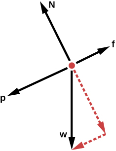
- Acceleration down the hill; the force due to being pushed, together with the downhill component of gravity, overcomes the opposing force of friction.
- Acceleration down the hill; friction is less than the opposing component of force due to gravity.
- No movement; friction is greater than the force due to being pushed.
- No movement; friction is greater than the sum of the downhill forces.
Draw a free-body diagram to represent the forces acting on a kite on a string that is floating stationary in the air. Label the forces in your diagram.
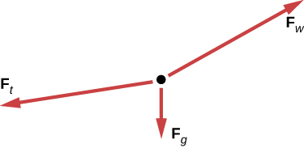
The diagram has a black dot and three solid red arrows pointing away from the dot. Arrow Ft is long and pointing to the left and slightly down. Arrow Fw is also long and is a bit below a diagonal line halfway between pointing up and pointing to the right. A short arrow Fg is pointing down.
Fg is the force on the kite due to gravity.
Fw is the force exerted on the kite by the wind.
Ft is the force of tension in the string holding the kite. It must balance the vector sum of the other two forces for the kite to float stationary in the air.
A car is sliding down a hill with a slope of 20°. The mass of the car is 965 kg. When a cable is used to pull the car up the slope, a force of 4215 N is applied. What is the car’s acceleration, ignoring friction?
4.6.6 Section Summary
When objects rest on a surface, the surface applies a force to the object that supports the weight of the object. This supporting force acts perpendicular to and away from the surface. It is called a normal force, \(\textbf{N}{}\).
When objects rest on a non-accelerating horizontal surface, the magnitude of the normal force is equal to the weight of the object: ::: {#eip-id1331551 data-type=“equation”} \[{N = \text{mg}}.\]
:::
When objects rest on an inclined plane that makes an angle \(\theta{}\) with the horizontal surface, the weight of the object can be resolved into components that act perpendicular (\(\textbf{w}_{\bot}{}\)) and parallel (\(\textbf{w}_{\parallel}{}\)) to the surface of the plane. These components can be calculated using: ::: {#eip-id2419526 data-type=“equation”} \[{{w_{\parallel} = w\ }\text{sin}\ (\theta{) = \text{mg}}\ \text{sin}\ (\theta)}{}\]
:::
\[{{w_{\bot} = w}\ \text{cos}\ (\theta{) = {\text{mg}\ }}\text{cos}\ (\theta)}.\]
The pulling force that acts along a stretched flexible connector, such as a rope or cable, is called tension, \(\textbf{T}{}\). When a rope supports the weight of an object that is at rest, the tension in the rope is equal to the weight of the object: ::: {#eip-id1166246 data-type=“equation”} \[{T = \text{mg}}.\]
:::
In any inertial frame of reference (one that is not accelerated or rotated), Newton’s laws have the simple forms given in this chapter and all forces are real forces having a physical origin.
4.6.7 Conceptual Questions
If a leg is suspended by a traction setup as shown in link, what is the tension in the rope?
A leg is suspended by a traction system in which wires are used to transmit forces. Frictionless pulleys change the direction of the force T without changing its magnitude.
In a traction setup for a broken bone, with pulleys and rope available, how might we be able to increase the force along the tibia using the same weight? (See link.) (Note that the tibia is the shin bone shown in this image.)
4.6.8 Problem Exercises
Two teams of nine members each engage in a tug of war. Each of the first team’s members has an average mass of 68 kg and exerts an average force of 1350 N horizontally. Each of the second team’s members has an average mass of 73 kg and exerts an average force of 1365 N horizontally. (a) What is magnitude of the acceleration of the two teams? (b) What is the tension in the section of rope between the teams?
- \({0.\text{11\ m/s}^{2}}{}\)
- \({1\text{.}{2 \times \text{10}^{4}}\ \text{N}}{}\)
What force does a trampoline have to apply to a 45.0-kg gymnast to accelerate her straight up at \({7\text{.}\text{50\ m/s}^{2}}{}\)? Note that the answer is independent of the velocity of the gymnast—she can be moving either up or down, or be stationary.
\(a\) Calculate the tension in a vertical strand of spider web if a spider of mass \({8\text{.}{\text{00} \times \text{10}^{- 5}}\ \text{kg}}{}\) hangs motionless on it. (b) Calculate the tension in a horizontal strand of spider web if the same spider sits motionless in the middle of it much like the tightrope walker in link. The strand sags at an angle of \(\text{12º}{}\) below the horizontal. Compare this with the tension in the vertical strand (find their ratio).
\(a\) \({7\text{.}{\text{84} \times \text{10}^{-4}}\ \text{N}}{}\)
\(b\) \({1\text{.}{\text{89} \times \text{10}^{–3}}\ \text{N}}{}\) . This is 2.41 times the tension in the vertical strand.
Suppose a 60.0-kg gymnast climbs a rope. (a) What is the tension in the rope if he climbs at a constant speed? (b) What is the tension in the rope if he accelerates upward at a rate of \({1\text{.}\text{50\ m/s}^{2}}{}\)?
Show that, as stated in the text, a force \(\textbf{F}_{\bot}{}\) exerted on a flexible medium at its center and perpendicular to its length (such as on the tightrope wire in link) gives rise to a tension of magnitude \({T = \frac{F_{\bot}}{2\ \text{sin}\ (\theta)}}{}\).
Newton’s second law applied in vertical direction gives
\[{{F_{y} = {F - 2T}\ }\text{sin}\ {\theta = 0}}{}\]
\[{{F_{} = 2T\ }\text{sin}\ \theta}{}\]
\[{T = \frac{F_{}}{\text{2\ sin}\ \theta}}.\]
Consider the baby being weighed in link. (a) What is the mass of the child and basket if a scale reading of 55 N is observed? (b) What is the tension \(T_{1}{}\) in the cord attaching the baby to the scale? (c) What is the tension \(T_{2}{}\) in the cord attaching the scale to the ceiling, if the scale has a mass of 0.500 kg? (d) Draw a sketch of the situation indicating the system of interest used to solve each part. The masses of the cords are negligible.
A baby is weighed using a spring scale.
4.6.9 Glossary
- inertial frame of reference
- a coordinate system that is not accelerating; all forces acting in an inertial frame of reference are real forces, as opposed to fictitious forces that are observed due to an accelerating frame of reference
- normal force
- the force that a surface applies to an object to support the weight of the object; acts perpendicular to the surface on which the object rests
- tension
- the pulling force that acts along a medium, especially a stretched flexible connector, such as a rope or cable; when a rope supports the weight of an object, the force on the object due to the rope is called a tension force
4.7 Problem-Solving Strategies
4.7.1 Learning Objectives
By the end of this section, you will be able to:
- Apply a problem-solving procedure to solve problems using Newton's laws of motion
The information presented in this section supports the following AP® learning objectives and science practices:
- 3.A.2.1 The student is able to represent forces in diagrams or mathematically using appropriately labeled vectors with magnitude, direction, and units during the analysis of a situation. (S.P. 1.1)
- 3.A.3.3 The student is able to describe a force as an interaction between two objects and identify both objects for any force. (S.P. 1.4)
- 3.B.1.1 The student is able to predict the motion of an object subject to forces exerted by several objects using an application of Newton's second law in a variety of physical situations with acceleration in one dimension. (S.P. 6.4, 7.2)
- 3.B.1.3 The student is able to re-express a free-body diagram representation into a mathematical representation and solve the mathematical representation for the acceleration of the object. (S.P. 1.5, 2.2)
- 3.B.2.1 The student is able to create and use free-body diagrams to analyze physical situations to solve problems with motion qualitatively and quantitatively. (S.P. 1.1, 1.4, 2.2)
Success in problem solving is obviously necessary to understand and apply physical principles, not to mention the more immediate need of passing exams. The basics of problem solving, presented earlier in this text, are followed here, but specific strategies useful in applying Newton’s laws of motion are emphasized. These techniques also reinforce concepts that are useful in many other areas of physics. Many problem-solving strategies are stated outright in the worked examples, and so the following techniques should reinforce skills you have already begun to develop.
4.7.2 Problem-Solving Strategy for Newton’s Laws of Motion
Step 1. As usual, it is first necessary to identify the physical principles involved. Once it is determined that Newton’s laws of motion are involved (if the problem involves forces), it is particularly important to draw a careful sketch of the situation. Such a sketch is shown in link(a). Then, as in link(b), use arrows to represent all forces, label them carefully, and make their lengths and directions correspond to the forces they represent (whenever sufficient information exists).

(a) A sketch of Tarzan hanging from a vine. (b) Arrows are used to represent all forces. \(\textbf{T}{}\) is the tension in the vine above Tarzan, \(\textbf{F}_{\text{T}}{}\) is the force he exerts on the vine, and \(\textbf{w}{}\) is his weight. All other forces, such as the nudge of a breeze, are assumed negligible. (c) Suppose we are given the ape man’s mass and asked to find the tension in the vine. We then define the system of interest as shown and draw a free-body diagram. \(\textbf{F}_{\text{T}}{}\) is no longer shown, because it is not a force acting on the system of interest; rather, \(\textbf{F}_{\text{T}}{}\) acts on the outside world. (d) Showing only the arrows, the head-to-tail method of addition is used. It is apparent that \({\textbf{T} = - \mathbf{w}}{}\), if Tarzan is stationary.
Step 2. Identify what needs to be determined and what is known or can be
inferred from the problem as stated. That is, make a list of knowns and
unknowns. Then carefully determine the system of interest. This
decision is a crucial step, since Newton’s second law involves only
external forces. Once the system of interest has been identified, it
becomes possible to determine which forces are external and which are
internal, a necessary step to employ Newton’s second law. (See
link(c).) Newton’s
third law may be used to identify whether forces are exerted between
components of a system (internal) or between the system and something
outside (external). As illustrated earlier in this chapter, the system
of interest depends on what question we need to answer. This choice
becomes easier with practice, eventually developing into an almost
unconscious process. Skill in clearly defining systems will be
beneficial in later chapters as well.
A diagram showing the system of interest and all
of the external forces is called a free-body
diagram. Only forces are shown
on free-body diagrams, not acceleration or velocity. We have drawn
several of these in worked examples.
link(c) shows a
free-body diagram for the system of interest. Note that no internal
forces are shown in a free-body diagram.
Step 3. Once a free-body diagram is drawn, Newton’s second law can be applied to solve the problem. This is done in link(d) for a particular situation. In general, once external forces are clearly identified in free-body diagrams, it should be a straightforward task to put them into equation form and solve for the unknown, as done in all previous examples. If the problem is one-dimensional—that is, if all forces are parallel—then they add like scalars. If the problem is two-dimensional, then it must be broken down into a pair of one-dimensional problems. This is done by projecting the force vectors onto a set of axes chosen for convenience. As seen in previous examples, the choice of axes can simplify the problem. For example, when an incline is involved, a set of axes with one axis parallel to the incline and one perpendicular to it is most convenient. It is almost always convenient to make one axis parallel to the direction of motion, if this is known.
Applying Newton’s Second Law
Before you write net force equations, it is critical to determine whether the system is accelerating in a particular direction. If the acceleration is zero in a particular direction, then the net force is zero in that direction. Similarly, if the acceleration is nonzero in a particular direction, then the net force is described by the equation: \({F_{\text{net}} = \text{ma}}{}\).
For example, if the system is accelerating in the horizontal direction, but it is not accelerating in the vertical direction, then you will have the following conclusions:
\[{F_{\text{net}\ x} = \text{ma}},\]
\[{F_{\text{net}\ y} = 0}.\]
You will need this information in order to determine unknown forces acting in a system.
Step 4. As always, check the solution to see whether it is reasonable. In some cases, this is obvious. For example, it is reasonable to find that friction causes an object to slide down an incline more slowly than when no friction exists. In practice, intuition develops gradually through problem solving, and with experience it becomes progressively easier to judge whether an answer is reasonable. Another way to check your solution is to check the units. If you are solving for force and end up with units of m/s, then you have made a mistake.
4.7.3 Test Prep for AP Courses
A toboggan with two riders has a total mass of 85.0 kg. A third person is pushing with a horizontal force of 42.5 N on a toboggan moving on a horizontal surface at the top of a hill that has a downward angle of 15°. The force of friction on the toboggan is 31.0 N. Which statement describes an accurate free-body diagram to represent the situation?
- An arrow of magnitude 10.5 N points down the slope of the hill.
- An arrow of magnitude 833 N points straight down.
- An arrow of magnitude 833 N points perpendicular to the slope of the hill.
- An arrow of magnitude 73.5 N points down the slope of the hill.
\(b\)
A mass of 2.0 kg is suspended from the ceiling of an elevator by a rope. What is the tension in the rope when the elevator (i) accelerates upward at 1.5 m/s2? (ii) accelerates downward at 1.5 m/s2?
- \(i\) 22.6 N; (ii) 16.6 N
- Because the mass is hanging from the elevator itself, the tension in the rope will not change in either case.
- \(i\) 22.6 N; (ii) 19.6 N
- \(i\) 16.6 N; (ii) 19.6 N
Which statement is true about drawing free-body diagrams?
- Drawing a free-body diagram should be the last step in solving a problem about forces.
- Drawing a free-body diagram helps you compare forces quantitatively.
- The forces in a free-body diagram should always balance.
- Drawing a free-body diagram can help you determine the net force.
\(d\)
4.7.4 Section Summary
- To solve problems involving Newton’s laws of motion, follow the
procedure described:
- Draw a sketch of the problem.
- Identify known and unknown quantities, and identify the system of interest. Draw a free-body diagram, which is a sketch showing all of the forces acting on an object. The object is represented by a dot, and the forces are represented by vectors extending in different directions from the dot. If vectors act in directions that are not horizontal or vertical, resolve the vectors into horizontal and vertical components and draw them on the free-body diagram.
- Write Newton’s second law in the horizontal and vertical directions and add the forces acting on the object. If the object does not accelerate in a particular direction (for example, the \(x{}\)-direction) then \({F_{\text{net}\ x} = 0}{}\). If the object does accelerate in that direction, \({F_{\text{net}\ x} = \text{ma}}{}\).
- Check your answer. Is the answer reasonable? Are the units correct?
4.7.5 Problem Exercises
A \({5\text{.}{\text{00} \times \text{10}^{5}}\text{-kg}}{}\) rocket is accelerating straight up. Its engines produce \({1\text{.}{\text{250} \times \text{10}^{7}\ }\text{N}}{}\) of thrust, and air resistance is \({4\text{.}{\text{50} \times \text{10}^{6}}\ \text{N}}{}\). What is the rocket’s acceleration? Explicitly show how you follow the steps in the Problem-Solving Strategy for Newton’s laws of motion.
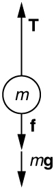
Using the free-body diagram:
\({{F_{\text{net}} = {T - f - mg}} = \text{ma}}{}\),
so that
\({{{{a = \frac{T{-}f{-}\text{mg}}{m}} = \frac{1\text{.}{\text{250} \times \text{10}^{7}\ }{\text{N} - 4.50}{\times \text{10}^{\text{6}}}\ {N - (}5.00{\times \text{10}^{5}\ }\text{kg})(9.\text{80\ m/s}^{2})}{5.00{\times \text{10}^{5}}\ \text{kg}}} = \text{6.20}}\ \text{m/s}^{2}}{}\).
The wheels of a midsize car exert a force of 2100 N backward on the road to accelerate the car in the forward direction. If the force of friction including air resistance is 250 N and the acceleration of the car is \({1\text{.}\text{80\ m/s}^{2}}{}\), what is the mass of the car plus its occupants? Explicitly show how you follow the steps in the Problem-Solving Strategy for Newton’s laws of motion. For this situation, draw a free-body diagram and write the net force equation.
Calculate the force a 70.0-kg high jumper must exert on the ground to produce an upward acceleration 4.00 times the acceleration due to gravity. Explicitly show how you follow the steps in the Problem-Solving Strategy for Newton’s laws of motion.
Use Newton’s laws of motion.
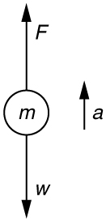
Given : \({{a = 4.00}{g = (}4.00)(9.\text{80\ m/s}^{2}{) = \text{39.2}}\ \text{m/s}^{2}\text{;}\ }{}\)\({{m = \text{70}}\text{.}\text{0\ kg}}{}\),
Find: \(F{}\).
\({\sum{F\text{=+}{{F - w} = \text{ma}}\text{,}}}{}\) so that \({{{{F = {\text{ma} + w}} = {\text{ma} + \text{mg}}} = m}({a + g})}{}\).
\({{F = (}\text{70.0\ kg})\lbrack(\text{39}\text{.}\text{2\ m/s}^{2}{) + (}9\text{.}\text{80\ m/s}^{2})\rbrack}{}\)\({= {3.{\text{43} \times \text{10}^{3}}\text{N}}}{}\). The force exerted by the high-jumper is actually down on the ground, but \(F{}\) is up from the ground and makes him jump.
This result is reasonable, since it is quite possible for a person to exert a force of the magnitude of \({\text{10}^{3}\ \text{N}}{}\).
When landing after a spectacular somersault, a 40.0-kg gymnast decelerates by pushing straight down on the mat. Calculate the force she must exert if her deceleration is 7.00 times the acceleration due to gravity. Explicitly show how you follow the steps in the Problem-Solving Strategy for Newton’s laws of motion.
A freight train consists of two \(8.00 \times 10^{4}\text{-kg}\) engines and 45 cars with average masses of \(5.50 \times 10^{4}\ \text{kg}\) . (a) What force must each engine exert backward on the track to accelerate the train at a rate of \({5.00{\times \text{10}^{\text{–2}}}\ \text{m/s}^{2}}{}\) if the force of friction is \({7\text{.}{\text{50} \times \text{10}^{5}}\ \text{N}}{}\), assuming the engines exert identical forces? This is not a large frictional force for such a massive system. Rolling friction for trains is small, and consequently trains are very energy-efficient transportation systems. (b) What is the force in the coupling between the 37th and 38th cars (this is the force each exerts on the other), assuming all cars have the same mass and that friction is evenly distributed among all of the cars and engines?
\(a\) \({4\text{.}{\text{41} \times \text{10}^{5}}\ \text{N}}{}\)
\(b\) \({1\text{.}{\text{50} \times \text{10}^{5}}\ \text{N}}{}\)
Commercial airplanes are sometimes pushed out of the passenger loading area by a tractor. (a) An 1800-kg tractor exerts a force of \({1\text{.}{\text{75} \times \text{10}^{4}}\ \text{N}}{}\) backward on the pavement, and the system experiences forces resisting motion that total 2400 N. If the acceleration is \({0\text{.}\text{150\ m/s}^{2}}{}\), what is the mass of the airplane? (b) Calculate the force exerted by the tractor on the airplane, assuming 2200 N of the friction is experienced by the airplane. (c) Draw two sketches showing the systems of interest used to solve each part, including the free-body diagrams for each.
A 1100-kg car pulls a boat on a trailer. (a) What total force resists the motion of the car, boat, and trailer, if the car exerts a 1900-N force on the road and produces an acceleration of \({0\text{.}\text{550\ m/s}^{2}}{}\)? The mass of the boat plus trailer is 700 kg. (b) What is the force in the hitch between the car and the trailer if 80% of the resisting forces are experienced by the boat and trailer?
\(a\) \(\text{910\ N}{}\)
\(b\) \({1\text{.}{\text{11} \times \text{10}^{3}}\ \text{N}}{}\)
\(a\) Find the magnitudes of the forces \(\textbf{F}_{1}{}\) and \(\textbf{F}_{2}{}\) that add to give the total force \(\textbf{F}_{\text{tot}}{}\) shown in link. This may be done either graphically or by using trigonometry. (b) Show graphically that the same total force is obtained independent of the order of addition of \(\textbf{F}_{1}{}\) and \(\textbf{F}_{2}{}\). (c) Find the direction and magnitude of some other pair of vectors that add to give \(\textbf{F}_{\text{tot}}{}\). Draw these to scale on the same drawing used in part (b) or a similar picture.
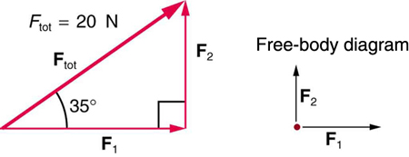
Two children pull a third child on a snow saucer sled exerting forces \(\textbf{F}_{1}\) and \(\textbf{F}_{2}\) as shown from above in link. Find the acceleration of the 49.00-kg sled and child system. Note that the direction of the frictional force is unspecified; it will be in the opposite direction of the sum of \(\textbf{F}_{1}\) and \(\textbf{F}_{2}\).
\(a = \text{0.139\ m/s}\), \(\theta = 12.4º\) north of east
An overhead view of the horizontal forces acting on a child’s snow saucer sled.
Suppose your car was mired deeply in the mud and you wanted to use the method illustrated in link to pull it out. (a) What force would you have to exert perpendicular to the center of the rope to produce a force of 12,000 N on the car if the angle is 2.00°? In this part, explicitly show how you follow the steps in the Problem-Solving Strategy for Newton’s laws of motion. (b) Real ropes stretch under such forces. What force would be exerted on the car if the angle increases to 7.00° and you still apply the force found in part (a) to its center?
What force is exerted on the tooth in link if the tension in the wire is 25.0 N? Note that the force applied to the tooth is smaller than the tension in the wire, but this is necessitated by practical considerations of how force can be applied in the mouth. Explicitly show how you follow steps in the Problem-Solving Strategy for Newton’s laws of motion.
Use Newton’s laws since we are looking for forces.
Draw a force diagram:
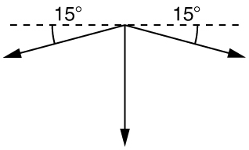
The tension is given as \({T = \text{25.0\ N.}}{}\) Find \({F_{\text{app}}\text{.}}{}\) Using Newton’s laws gives: \({\text{Σ\ F}_{x} = 0,}{}\) so that applied force is due to the y-components of the two tensions: \({{F_{\text{app}} = 2\ }T\ \text{sin}{\text{θ} = 2}(\text{25.0\ N})\text{sin}\left( \text{15º} \right)}{} = \text{12.9\ N}\)
The x-components of the tension cancel. \({{\sum F_{x}} = 0}{}\).
This seems reasonable, since the applied tensions should be greater than the force applied to the tooth.
Braces are used to apply forces to teeth to realign them. Shown in this figure are the tensions applied by the wire to the protruding tooth. The total force applied to the tooth by the wire, \(\textbf{F}_{\text{app}}{}\), points straight toward the back of the mouth.
link shows Superhero and Trusty Sidekick hanging motionless from a rope. Superhero’s mass is 90.0 kg, while Trusty Sidekick’s is 55.0 kg, and the mass of the rope is negligible. (a) Draw a free-body diagram of the situation showing all forces acting on Superhero, Trusty Sidekick, and the rope. (b) Find the tension in the rope above Superhero. (c) Find the tension in the rope between Superhero and Trusty Sidekick. Indicate on your free-body diagram the system of interest used to solve each part.
Superhero and Trusty Sidekick hang motionless on a rope as they try to figure out what to do next. Will the tension be the same everywhere in the rope?
A nurse pushes a cart by exerting a force on the handle at a downward angle \(\text{35.0º}{}\) below the horizontal. The loaded cart has a mass of 28.0 kg, and the force of friction is 60.0 N. (a) Draw a free-body diagram for the system of interest. (b) What force must the nurse exert to move at a constant velocity?
Construct Your Own Problem Consider the tension in an elevator cable during the time the elevator starts from rest and accelerates its load upward to some cruising velocity. Taking the elevator and its load to be the system of interest, draw a free-body diagram. Then calculate the tension in the cable. Among the things to consider are the mass of the elevator and its load, the final velocity, and the time taken to reach that velocity.
Construct Your Own Problem Consider two people pushing a toboggan with four children on it up a snow-covered slope. Construct a problem in which you calculate the acceleration of the toboggan and its load. Include a free-body diagram of the appropriate system of interest as the basis for your analysis. Show vector forces and their components and explain the choice of coordinates. Among the things to be considered are the forces exerted by those pushing, the angle of the slope, and the masses of the toboggan and children.
Unreasonable Results (a) Repeat link, but assume an acceleration of \({1\text{.}\text{20\ m/s}^{2}}{}\) is produced. (b) What is unreasonable about the result? (c) Which premise is unreasonable, and why is it unreasonable?
Unreasonable Results (a) What is the initial acceleration of a rocket that has a mass of \({1\text{.}{\text{50} \times \text{10}^{6}}\ \text{kg}}{}\) at takeoff, the engines of which produce a thrust of \({2\text{.}{\text{00} \times \text{10}^{6}}\ \text{N}}{}\)? Do not neglect gravity. (b) What is unreasonable about the result? (This result has been unintentionally achieved by several real rockets.) (c) Which premise is unreasonable, or which premises are inconsistent? (You may find it useful to compare this problem to the rocket problem earlier in this section.)
4.8 Further Applications of Newton's Laws of Motion
4.8.1 Learning Objectives
By the end of this section, you will be able to:
- Apply problem-solving techniques to solve for quantities in more complex systems of forces.
- Integrate concepts from kinematics to solve problems using Newton's laws of motion.
The information presented in this section supports the following AP® learning objectives and science practices:
- 3.A.2.1 The student is able to represent forces in diagrams or mathematically using appropriately labeled vectors with magnitude, direction, and units during the analysis of a situation. (S.P. 1.1)
- 3.A.3.1 The student is able to analyze a scenario and make claims (develop arguments, justify assertions) about the forces exerted on an object by other objects for different types of forces or components of forces. (S.P. 6.4, 7.2)
- 3.A.3.3 The student is able to describe a force as an interaction between two objects and identify both objects for any force. (S.P. 1.4)
- 3.B.1.1 The student is able to predict the motion of an object subject to forces exerted by several objects using an application of Newton's second law in a variety of physical situations with acceleration in one dimension. (S.P. 6.4, 7.2)
- 3.B.1.3 The student is able to re-express a free-body diagram representation into a mathematical representation and solve the mathematical representation for the acceleration of the object. (S.P. 1.5, 2.2)
- 3.B.2.1 The student is able to create and use free-body diagrams to analyze physical situations to solve problems with motion qualitatively and quantitatively. (S.P. 1.1, 1.4, 2.2)
There are many interesting applications of Newton’s laws of motion, a few more of which are presented in this section. These serve also to illustrate some further subtleties of physics and to help build problem-solving skills.
Drag Force on a Barge
Suppose two tugboats push on a barge at different angles, as shown in link. The first tugboat exerts a force of \({2.7{\times \text{10}^{5}}\ \text{N}}{}\) in the x-direction, and the second tugboat exerts a force of \({3.6{\times \text{10}^{5}}\ \text{N}}{}\) in the y-direction.
(a) A view from above of two tugboats pushing on a barge. (b) The free-body diagram for the ship contains only forces acting in the plane of the water. It omits the two vertical forces—the weight of the barge and the buoyant force of the water supporting it cancel and are not shown. Since the applied forces are perpendicular, the x- and y-axes are in the same direction as \(\textbf{F}_{x}{}\) and \(\textbf{F}_{y}{}\). The problem quickly becomes a one-dimensional problem along the direction of \(\textbf{F}_{\text{app}}{}\), since friction is in the direction opposite to \(\textbf{F}_{\text{app}}{}\).
If the mass of the barge is \({{5.0 \times \text{10}^{6}}\ \text{kg}}{}\) and its acceleration is observed to be \({7\text{.}{\text{5} \times \text{10}^{- 2}}\ \text{m/s}^{2}}{}\) in the direction shown, what is the drag force of the water on the barge resisting the motion? (Note: drag force is a frictional force exerted by fluids, such as air or water. The drag force opposes the motion of the object.)
Strategy
The directions and magnitudes of acceleration and the applied forces are given in link(a). We will define the total force of the tugboats on the barge as \(\textbf{F}_{\text{app}}{}\) so that:
\[\textbf{F}_{\text{app}}\text{=}\textbf{F}_{\mathit{x}} + \textbf{F}_{\mathit{y}}\]
Since the barge is flat bottomed, the drag of the water \(\textbf{F}_{\text{D}}{}\) will be in the direction opposite to \(\textbf{F}_{\text{app}}{}\), as shown in the free-body diagram in link(b). The system of interest here is the barge, since the forces on it are given as well as its acceleration. Our strategy is to find the magnitude and direction of the net applied force \(\textbf{F}_{\text{app}}{}\), and then apply Newton’s second law to solve for the drag force \(\textbf{F}_{\text{D}}{}\).
Solution
Since \(\textbf{F}_{x}{}\) and \(\textbf{F}_{y}{}\) are perpendicular, the magnitude and direction of \(\textbf{F}_{\text{app}}{}\) are easily found. First, the resultant magnitude is given by the Pythagorean theorem:
\[\begin{array}{lllll} F_{\text{app}} & = & \sqrt{\text{F}_{x}^{2} + \text{F}_{y}^{2}} & & \\ F_{\text{app}} & = & \sqrt{(2.7{\times \text{10}^{5}}\ \text{N}{)^{2} + (}3.6{\times \text{10}^{5}}\ \text{N})^{2}} & = & {{4.5 \times \text{10}^{5}}\ \text{N.}} \\ \end{array}{}\]
The angle is given by
\[\begin{array}{lll} \theta & = & {\text{tan}^{- 1}\left( \frac{F_{y}}{F_{x}} \right)} \\ \theta & = & {\text{tan}^{- 1}{\left( \frac{3.6{\times \text{10}^{5}}\ \text{N}}{2.7{\times \text{10}^{5}}\ \text{N}} \right) = \text{53º}},} \\ \end{array}{}\]
which we know, because of Newton’s first law, is the same direction as the acceleration. \(\textbf{F}_{\text{D}}{}\) is in the opposite direction of \(\textbf{F}_{\text{app}}{}\), since it acts to slow down the acceleration. Therefore, the net external force is in the same direction as \(\textbf{F}_{\text{app}}{}\), but its magnitude is slightly less than \(\textbf{F}_{\text{app}}{}\). The problem is now one-dimensional. From link(b), we can see that
\[{F_{\text{net}} = {F_{\text{app}} - F_{\text{D}}}}.\]
But Newton’s second law states that
\[{F_{\text{net}} = \text{ma}}.\]
Thus,
\[{{F_{\text{app}} - F_{\text{D}}} = \text{ma}}.\]
This can be solved for the magnitude of the drag force of the water \(F_{\text{D}}{}\) in terms of known quantities:
\[{F_{\text{D}} = {F_{\text{app}} - \text{ma}}}.\]
Substituting known values gives
\[{{\text{F}_{\text{D}} = (}4\text{.}{\text{5} \times \text{10}^{5}}\ \text{N}{) - (}5\text{.}{\text{0} \times \text{10}^{6}}\ \text{kg})(7\text{.}{\text{5} \times \text{10}^{\text{–2}}}\ \text{m/s}^{2}{) = 7}\text{.}{\text{5} \times \text{10}^{4}}\ \text{N}}.\]
The direction of \(\textbf{F}_{\text{D}}{}\) has already been determined to be in the direction opposite to \(\textbf{F}_{\text{app}}{}\), or at an angle of \(\text{53º}{}\) south of west.
Discussion
The numbers used in this example are reasonable for a moderately large barge. It is certainly difficult to obtain larger accelerations with tugboats, and small speeds are desirable to avoid running the barge into the docks. Drag is relatively small for a well-designed hull at low speeds, consistent with the answer to this example, where \(F_{\text{D}}{}\) is less than 1/600th of the weight of the ship.
In the earlier example of a tightrope walker we noted that the tensions in wires supporting a mass were equal only because the angles on either side were equal. Consider the following example, where the angles are not equal; slightly more trigonometry is involved.
Different Tensions at Different Angles
Consider the traffic light (mass 15.0 kg) suspended from two wires as shown in link. Find the tension in each wire, neglecting the masses of the wires.
A traffic light is suspended from two wires. (b) Some of the forces involved. (c) Only forces acting on the system are shown here. The free-body diagram for the traffic light is also shown. (d) The forces projected onto vertical (y) and horizontal (x) axes. The horizontal components of the tensions must cancel, and the sum of the vertical components of the tensions must equal the weight of the traffic light. (e) The free-body diagram shows the vertical and horizontal forces acting on the traffic light.
Strategy
The system of interest is the traffic light, and its free-body diagram is shown in link(c). The three forces involved are not parallel, and so they must be projected onto a coordinate system. The most convenient coordinate system has one axis vertical and one horizontal, and the vector projections on it are shown in part (d) of the figure. There are two unknowns in this problem (\(T_{1}{}\) and \(T_{2}{}\)), so two equations are needed to find them. These two equations come from applying Newton’s second law along the vertical and horizontal axes, noting that the net external force is zero along each axis because acceleration is zero.
Solution
First consider the horizontal or x-axis:
\[{{F_{\text{net}x} = {T_{\text{2}x} - T_{\text{1}x}}} = 0}.\]
Thus, as you might expect,
\[{T_{\text{1}x} = T_{\text{2}x}}.\]
This gives us the following relationship between \(T_{1}{}\) and \(T_{2}{}\):
\[{T_{1}\ \text{cos}\ (\text{30º}{) = T_{2}}\ \text{cos}\ (\text{45º})}.\]
Thus,
\[{{T_{2} = (}1\text{.}\text{225})T_{1}}.\]
Note that \(T_{1}{}\) and \(T_{2}{}\) are not equal in this case, because the angles on either side are not equal. It is reasonable that \(T_{2}{}\) ends up being greater than \(T_{1}{}\), because it is exerted more vertically than \(T_{1}{}\).
Now consider the force components along the vertical or y-axis:
\[{{F_{\text{net}\ y} = {{T_{\text{1}y} + T_{\text{2}y}} - w}} = 0}.\]
This implies
\[{{T_{\text{1}y} + T_{\text{2}y}} = w}.\]
Substituting the expressions for the vertical components gives
\[{T_{1}\ \text{sin}\ (\text{30º}{) + T_{2}}\ \text{sin}\ (\text{45º}{) = w}}.\]
There are two unknowns in this equation, but substituting the expression for \(T_{2}{}\) in terms of \(T_{1}{}\) reduces this to one equation with one unknown:
\[{T_{1}(0\text{.}\text{500}{) + (}1\text{.}\text{225}T_{1})(0\text{.}\text{707}{{) = w} = \text{mg}}},\]
which yields
\[{\left( {1\text{.}\text{366}} \right){T_{1} = (}\text{15}\text{.}\text{0\ kg})(9\text{.}\text{80\ m/s}^{2})}.\]
Solving this last equation gives the magnitude of \(T_{1}{}\) to be
\[{T_{1} = \text{108\ N}}.\]
Finally, the magnitude of \(T_{2}{}\) is determined using the relationship between them, \(T_{2}{}\) = 1.225 \(T_{1}{}\), found above. Thus we obtain
\[{T_{2} = \text{132\ N}}.\]
Discussion
Both tensions would be larger if both wires were more horizontal, and they will be equal if and only if the angles on either side are the same (as they were in the earlier example of a tightrope walker).
The bathroom scale is an excellent example of a normal force acting on a body. It provides a quantitative reading of how much it must push upward to support the weight of an object. But can you predict what you would see on the dial of a bathroom scale if you stood on it during an elevator ride? Will you see a value greater than your weight when the elevator starts up? What about when the elevator moves upward at a constant speed: will the scale still read more than your weight at rest? Consider the following example.
What Does the Bathroom Scale Read in an Elevator?
link shows a 75.0-kg man (weight of about 165 lb) standing on a bathroom scale in an elevator. Calculate the scale reading: (a) if the elevator accelerates upward at a rate of \({1\text{.}\text{20\ m/s}^{2}}{}\), and (b) if the elevator moves upward at a constant speed of 1 m/s.

(a) The various forces acting when a person stands on a bathroom scale in an elevator. The arrows are approximately correct for when the elevator is accelerating upward—broken arrows represent forces too large to be drawn to scale. \(\textbf{T}{}\) is the tension in the supporting cable, \(\textbf{w}{}\) is the weight of the person, \(\textbf{w}_{\text{s}}{}\) is the weight of the scale, \(\textbf{w}_{\text{e}}{}\) is the weight of the elevator, \(\textbf{F}_{\text{s}}{}\) is the force of the scale on the person, \(\textbf{F}_{\text{p}}{}\) is the force of the person on the scale, \(\textbf{F}_{\text{t}}{}\) is the force of the scale on the floor of the elevator, and \(\textbf{N}{}\) is the force of the floor upward on the scale. (b) The free-body diagram shows only the external forces acting on the designated system of interest—the person.
Strategy
If the scale is accurate, its reading will equal \(F_{\text{p}}{}\), the magnitude of the force the person exerts downward on it. link(a) shows the numerous forces acting on the elevator, scale, and person. It makes this one-dimensional problem look much more formidable than if the person is chosen to be the system of interest and a free-body diagram is drawn as in link(b). Analysis of the free-body diagram using Newton’s laws can produce answers to both parts (a) and (b) of this example, as well as some other questions that might arise. The only forces acting on the person are his weight \(\textbf{w}{}\) and the upward force of the scale \(\textbf{F}_{\text{s}}{}\). According to Newton’s third law \(\textbf{F}_{\text{p}}{}\) and \(\textbf{F}_{\text{s}}{}\) are equal in magnitude and opposite in direction, so that we need to find \(F_{\text{s}}{}\) in order to find what the scale reads. We can do this, as usual, by applying Newton’s second law,
\[{F_{\text{net}} = \text{ma}}.\]
From the free-body diagram we see that \({F_{\text{net}} = {F_{\text{s}} - w}}{}\), so that
\[{{F_{\text{s}} - w} = \text{ma}}.\]
Solving for \(F_{\text{s}}{}\) gives an equation with only one unknown:
\[{F_{\text{s}} = {\text{ma} + w}},\]
or, because \(w = {mg}\), simply
\[{F_{\text{s}} = {\text{ma} + \text{mg}}}.\]
No assumptions were made about the acceleration, and so this solution should be valid for a variety of accelerations in addition to the ones in this exercise.
Solution for (a)
In this part of the problem, \({a = 1.20\ \text{m/s}^{2}}{}\), so that
\[{{F_{\text{s}} = (}\text{75}\text{.}\text{0\ kg})(1\text{.}\text{20\ m/s}^{2}{) + (}\text{75}\text{.}\text{0\ kg})(9\text{.}\text{80\ m/s}^{2})},\]
yielding
\[{{F_{\text{s}} = 8}\text{25\ N}}.\]
Discussion for (a)
This is about 185 lb. What would the scale have read if he were stationary? Since his acceleration would be zero, the force of the scale would be equal to his weight:
\[\begin{array}{lll} F_{\text{net}} & = & {\text{ma} = 0 = {F_{\text{s}} - w}} \\ F_{\text{s}} & = & {w = \text{mg}} \\ F_{\text{s}} & = & {(\text{75.0\ kg})(9.\text{80\ m/s}^{2})} \\ F_{\text{s}} & = & \text{735\ N.} \\ \end{array}\]
So, the scale reading in the elevator is greater than his 735-N (165 lb) weight. This means that the scale is pushing up on the person with a force greater than his weight, as it must in order to accelerate him upward. Clearly, the greater the acceleration of the elevator, the greater the scale reading, consistent with what you feel in rapidly accelerating versus slowly accelerating elevators.
Solution for (b)
Now, what happens when the elevator reaches a constant upward velocity? Will the scale still read more than his weight? For any constant velocity—up, down, or stationary—acceleration is zero because \({a = \frac{\Delta v}{\Delta t}}{}\), and \({\Delta v = 0}{}\).
Thus,
\[{{F_{\text{s}} = {\text{ma} + \text{mg}}} = {0 + \text{mg}}}.\]
Now
\[{{F_{\text{s}} = (}\text{75}\text{.}\text{0\ kg})(9\text{.}\text{80\ m/s}^{2})},\]
which gives
\[{{F_{\text{s}} = 7}\text{35\ N}}.\]
Discussion for (b)
The scale reading is 735 N, which equals the person’s weight. This will be the case whenever the elevator has a constant velocity—moving up, moving down, or stationary.
The solution to the previous example also applies to an elevator accelerating downward, as mentioned. When an elevator accelerates downward, \(a{}\) is negative, and the scale reading is less than the weight of the person, until a constant downward velocity is reached, at which time the scale reading again becomes equal to the person’s weight. If the elevator is in free-fall and accelerating downward at \(g{}\), then the scale reading will be zero and the person will appear to be weightless.
4.8.2 Integrating Concepts: Newton’s Laws of Motion and Kinematics
Physics is most interesting and most powerful when applied to general situations that involve more than a narrow set of physical principles. Newton’s laws of motion can also be integrated with other concepts that have been discussed previously in this text to solve problems of motion. For example, forces produce accelerations, a topic of kinematics, and hence the relevance of earlier chapters. When approaching problems that involve various types of forces, acceleration, velocity, and/or position, use the following steps to approach the problem:
Problem-Solving Strategy
Step 1. Identify which physical principles are involved. Listing the
givens and the quantities to be calculated will allow you to identify
the principles involved.
Step 2. Solve the problem using strategies
outlined in the text. If these are available for the specific topic,
you should refer to them. You should also refer to the sections of the
text that deal with a particular topic. The following worked example
illustrates how these strategies are applied to an integrated concept
problem.
What Force Must a Soccer Player Exert to Reach Top Speed?
A soccer player starts from rest and accelerates forward, reaching a velocity of 8.00 m/s in 2.50 s. (a) What was his average acceleration? (b) What average force did he exert backward on the ground to achieve this acceleration? The player’s mass is 70.0 kg, and air resistance is negligible.
Strategy
- To solve an integrated concept problem, we must first identify the physical principles involved and identify the chapters in which they are found. Part (a) of this example considers acceleration along a straight line. This is a topic of kinematics. Part (b) deals with force, a topic of dynamics found in this chapter.
- The following solutions to each part of the example illustrate how the specific problem-solving strategies are applied. These involve identifying knowns and unknowns, checking to see if the answer is reasonable, and so forth.
Solution for (a)
We are given the initial and final velocities (zero and 8.00 m/s forward); thus, the change in velocity is \(\Delta v = 8.00\ m/s\). We are given the elapsed time, and so \({\Delta t = 2.50\ s}{}\). The unknown is acceleration, which can be found from its definition:
\[{a = \frac{\Delta v}{\Delta t}}.\]
Substituting the known values yields
\[\begin{array}{lll} a & = & \frac{8.00\ m/s}{2\text{.}50\ s} \\ & = & {3\text{.}\text{20\ m/s}^{2}.} \\ \end{array}{}\]
Discussion for (a)
This is an attainable acceleration for an athlete in good condition.
Solution for (b)
Here we are asked to find the average force the player exerts backward to achieve this forward acceleration. Neglecting air resistance, this would be equal in magnitude to the net external force on the player, since this force causes his acceleration. Since we now know the player’s acceleration and are given his mass, we can use Newton’s second law to find the force exerted. That is,
\[{F_{\text{net}} = \text{ma}}.\]
Substituting the known values of \(m{}\) and \(a{}\) gives
\[\begin{array}{lll} F_{\text{net}} & = & {(\text{70.0\ kg})(3\text{.}\text{20\ m/s}^{2})} \\ & = & {\text{224\ N}.} \\ \end{array}{}\]
Discussion for (b)
This is about 50 pounds, a reasonable average force.
This worked example illustrates how to apply problem-solving strategies to situations that include topics from different chapters. The first step is to identify the physical principles involved in the problem. The second step is to solve for the unknown using familiar problem-solving strategies. These strategies are found throughout the text, and many worked examples show how to use them for single topics. You will find these techniques for integrated concept problems useful in applications of physics outside of a physics course, such as in your profession, in other science disciplines, and in everyday life. The following problems will build your skills in the broad application of physical principles.
4.8.3 Test Prep for AP Courses
A basketball player jumps as he shoots the ball. Describe the forces that are acting on the ball and on the basketball player. What are the results?
Two people push on a boulder to try to move it. The mass of the boulder is 825 kg. One person pushes north with a force of 64 N. The other pushes west with a force of 38 N. Predict the magnitude of the acceleration of the boulder. Assume that friction is negligible.
A free-body diagram would show a northward force of 64 N and a westward force of 38 N. The net force is equal to the sum of the two applied forces. It can be found using the Pythagorean theorem:
\(\begin{matrix} {F_{\text{net}} =} & \sqrt{F_{x}{}^{2} + F_{y}{}^{w}} \\ & {= \sqrt{{(38\,\text{N})}^{2} + {(64\,\text{N})}^{2}}} \\ & {= 74.4\,\text{N}} \\ \end{matrix}\)
Since \(a = \frac{F}{m}\),
\(\begin{matrix} a & {= \frac{74.4\,\text{N}}{825\,\text{kg}}} \\ & {= 0.09\,\text{m/s}^{\text{2}}} \\ \end{matrix}\)
The boulder will accelerate at 0.09 m/s2.
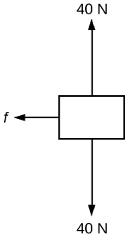
The figure shows the forces exerted on a block that is sliding on a horizontal surface: the gravitational force of 40 N, the 40 N normal force exerted by the surface, and a frictional force exerted to the left. The coefficient of friction between the block and the surface is 0.20. The acceleration of the block is most nearly
- 1.0 m/s2 to the right
- 1.0 m/s2 to the left
- 2.0 m/s2 to the right
- 2.0 m/s2 to the left
4.8.4 Summary
- Newton’s laws of motion can be applied in numerous situations to solve problems of motion.
- Some problems will contain multiple force vectors acting in different directions on an object. Be sure to draw diagrams, resolve all force vectors into horizontal and vertical components, and draw a free-body diagram. Always analyze the direction in which an object accelerates so that you can determine whether \({F_{\text{net}} = \text{ma}}{}\) or \({F_{\text{net}} = 0}{}\) .
- The normal force on an object is not always equal in magnitude to the weight of the object. If an object is accelerating, the normal force will be less than or greater than the weight of the object. Also, if the object is on an inclined plane, the normal force will always be less than the full weight of the object.
- Some problems will contain various physical quantities, such as forces, acceleration, velocity, or position. You can apply concepts from kinematics and dynamics in order to solve these problems of motion.
4.8.5 Conceptual Questions
To simulate the apparent weightlessness of space orbit, astronauts are trained in the hold of a cargo aircraft that is accelerating downward at \(g{}\). Why will they appear to be weightless, as measured by standing on a bathroom scale, in this accelerated frame of reference? Is there any difference between their apparent weightlessness in orbit and in the aircraft?
A cartoon shows the toupee coming off the head of an elevator passenger when the elevator rapidly stops during an upward ride. Can this really happen without the person being tied to the floor of the elevator? Explain your answer.
4.8.6 Problem Exercises
A flea jumps by exerting a force of \({1\text{.}{\text{20} \times \text{10}^{- 5}}\ \text{N}}{}\) straight down on the ground. A breeze blowing on the flea parallel to the ground exerts a force of \({0\text{.}{\text{500} \times \text{10}^{- 6}}\ \text{N}}{}\) on the flea. Find the direction and magnitude of the acceleration of the flea if its mass is \({6\text{.}{\text{00} \times \text{10}^{- 7}}\ \text{kg}}{}\). Do not neglect the gravitational force.
\(\text{10.2}\ \text{m/s}^{2}\text{,\ 4.67º\ from\ vertical}\)
Two muscles in the back of the leg pull upward on the Achilles tendon, as shown in link. (These muscles are called the medial and lateral heads of the gastrocnemius muscle.) Find the magnitude and direction of the total force on the Achilles tendon. What type of movement could be caused by this force?
Achilles tendon
A 76.0-kg person is being pulled away from a burning building as shown in link. Calculate the tension in the two ropes if the person is momentarily motionless. Include a free-body diagram in your solution.
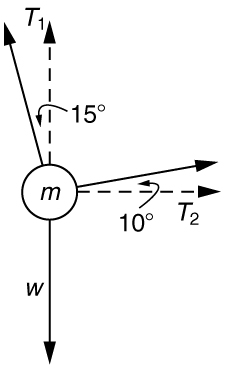
\(T_{1} = \text{736\ N}\)
\({T_{2} = \text{194\ N}}{}\)

The force \(\textbf{T}_{2}{}\) needed to hold steady the person being rescued from the fire is less than her weight and less than the force \(\textbf{T}_{1}{}\) in the other rope, since the more vertical rope supports a greater part of her weight (a vertical force).
Integrated Concepts A 35.0-kg dolphin decelerates from 12.0 to 7.50 m/s in 2.30 s to join another dolphin in play. What average force was exerted to slow him if he was moving horizontally? (The gravitational force is balanced by the buoyant force of the water.)
Integrated Concepts When starting a foot race, a 70.0-kg sprinter exerts an average force of 650 N backward on the ground for 0.800 s. (a) What is his final speed? (b) How far does he travel?
\(a\) \(7.43\ m/s{}\)
\(b\) 2.97 m
Integrated Concepts A large rocket has a mass of \({2\text{.}{\text{00} \times \text{10}^{6}}\ \text{kg}}{}\) at takeoff, and its engines produce a thrust of \({3\text{.}{\text{50} \times \text{10}^{7}}\ \text{N}}{}\). (a) Find its initial acceleration if it takes off vertically. (b) How long does it take to reach a velocity of 120 km/h straight up, assuming constant mass and thrust? (c) In reality, the mass of a rocket decreases significantly as its fuel is consumed. Describe qualitatively how this affects the acceleration and time for this motion.
Integrated Concepts A basketball player jumps straight up for a ball. To do this, he lowers his body 0.300 m and then accelerates through this distance by forcefully straightening his legs. This player leaves the floor with a vertical velocity sufficient to carry him 0.900 m above the floor. (a) Calculate his velocity when he leaves the floor. (b) Calculate his acceleration while he is straightening his legs. He goes from zero to the velocity found in part (a) in a distance of 0.300 m. (c) Calculate the force he exerts on the floor to do this, given that his mass is 110 kg.
\(a\) \(4.20\ m/s{}\)
\(b\) \({\text{29.4}\ \text{m/s}^{2}}{}\)
\(c\) \({4\text{.}{\text{31} \times \text{10}^{3}}\ \text{N}}{}\)
Integrated Concepts A 2.50-kg fireworks shell is fired straight up from a mortar and reaches a height of 110 m. (a) Neglecting air resistance (a poor assumption, but we will make it for this example), calculate the shell’s velocity when it leaves the mortar. (b) The mortar itself is a tube 0.450 m long. Calculate the average acceleration of the shell in the tube as it goes from zero to the velocity found in (a). (c) What is the average force on the shell in the mortar? Express your answer in newtons and as a ratio to the weight of the shell.
Integrated Concepts Repeat link for a shell fired at an angle \(\text{10.0º}{}\) from the vertical.
\(a\) 47.1 m/s
\(b\) \({2\text{.}{\text{47} \times \text{10}^{3}}\ \text{m/s}^{2}}{}\)
\(c\) \({6.18 \times \text{10}^{3}}\ \text{N}\) . The average force is 252 times the shell’s weight.
Integrated Concepts An elevator filled with passengers has a mass of 1700 kg. (a) The elevator accelerates upward from rest at a rate of \({1\text{.}\text{20\ m/s}^{2}}{}\) for 1.50 s. Calculate the tension in the cable supporting the elevator. (b) The elevator continues upward at constant velocity for 8.50 s. What is the tension in the cable during this time? (c) The elevator decelerates at a rate of \({0\text{.}\text{600\ m/s}^{2}}{}\) for 3.00 s. What is the tension in the cable during deceleration? (d) How high has the elevator moved above its original starting point, and what is its final velocity?
Unreasonable Results (a) What is the final velocity of a car originally traveling at 50.0 km/h that decelerates at a rate of \({0\text{.}\text{400\ m/s}^{2}}{}\) for 50.0 s? (b) What is unreasonable about the result? (c) Which premise is unreasonable, or which premises are inconsistent?
Unreasonable Results A 75.0-kg man stands on a bathroom scale in an elevator that accelerates from rest to 30.0 m/s in 2.00 s. (a) Calculate the scale reading in newtons and compare it with his weight. (The scale exerts an upward force on him equal to its reading.) (b) What is unreasonable about the result? (c) Which premise is unreasonable, or which premises are inconsistent?
4.9 Extended Topic: The Four Basic Forces—An Introduction
4.9.1 Learning Objectives
By the end of this section, you will be able to:
- Understand the four basic forces that underlie the processes in nature.
The information presented in this section supports the following AP® learning objectives and science practices:
- 3.C.4.1 The student is able to make claims about various contact forces between objects based on the microscopic cause of those forces. (S.P. 6.1)
- 3.C.4.2 The student is able to explain contact forces (tension, friction, normal, buoyant, spring) as arising from interatomic electric forces and that they therefore have certain directions. (S.P. 6.2)
- 3.G.1.1 The student is able to articulate situations when the gravitational force is the dominant force and when the electromagnetic, weak, and strong forces can be ignored. (S.P. 7.1)
One of the most remarkable simplifications in physics is that only four distinct forces account for all known phenomena. In fact, nearly all of the forces we experience directly are due to only one basic force, called the electromagnetic force. (The gravitational force is the only force we experience directly that is not electromagnetic.) This is a tremendous simplification of the myriad of apparently different forces we can list, only a few of which were discussed in the previous section. As we will see, the basic forces are all thought to act through the exchange of microscopic carrier particles, and the characteristics of the basic forces are determined by the types of particles exchanged. Action at a distance, such as the gravitational force of Earth on the Moon, is explained by the existence of a force field rather than by “physical contact.”
The four basic forces are the gravitational force, the electromagnetic force, the weak nuclear force, and the strong nuclear force. Their properties are summarized in link. Since the weak and strong nuclear forces act over an extremely short range, the size of a nucleus or less, we do not experience them directly, although they are crucial to the very structure of matter. These forces determine which nuclei are stable and which decay, and they are the basis of the release of energy in certain nuclear reactions. Nuclear forces determine not only the stability of nuclei, but also the relative abundance of elements in nature. The properties of the nucleus of an atom determine the number of electrons it has and, thus, indirectly determine the chemistry of the atom. More will be said of all of these topics in later chapters.
Concept Connections: The Four Basic Forces
The four basic forces will be encountered in more detail as you progress through the text. The gravitational force is defined in Uniform Circular Motion and Gravitation, electric force in Electric Charge and Electric Field, magnetic force in Magnetism, and nuclear forces in Radioactivity and Nuclear Physics. On a macroscopic scale, electromagnetism and gravity are the basis for all forces. The nuclear forces are vital to the substructure of matter, but they are not directly experienced on the macroscopic scale.
|
Force |
Approximate Relative Strengths |
Range |
Attraction/Repulsion |
Carrier Particle |
|---|---|---|---|---|
|
Gravitational |
\[\text{10}^{- \text{38}}{}\] |
\[\infty{}\] |
attractive only |
Graviton |
|
Electromagnetic |
\[\text{10}^{–2}{}\] |
\[\infty{}\] |
attractive and repulsive |
Photon |
|
Weak nuclear |
\[\text{10}^{–\text{13}}\] |
< \(10^{–18}\text{m}\) |
attractive and repulsive |
\(\text{W}^{+}{}\), \(\text{W}^{–}{}\), \(\text{Z}^{0}{}\) |
|
Strong nuclear |
\[1\] |
< \(10^{–15}\text{m}\) |
attractive and repulsive |
gluons |
The gravitational force is surprisingly weak—it is only because gravity is always attractive that we notice it at all. Our weight is the gravitational force due to the entire Earth acting on us. On the very large scale, as in astronomical systems, the gravitational force is the dominant force determining the motions of moons, planets, stars, and galaxies. The gravitational force also affects the nature of space and time. As we shall see later in the study of general relativity, space is curved in the vicinity of very massive bodies, such as the Sun, and time actually slows down near massive bodies.
Take a good look at the ranges for the four fundamental forces listed in link. The range of the strong nuclear force, 10−15 m, is approximately the size of the nucleus of an atom; the weak nuclear force has an even shorter range. At scales on the order of 10−10 m, approximately the size of an atom, both nuclear forces are completely dominated by the electromagnetic force. Notice that this scale is still utterly tiny compared to our everyday experience. At scales that we do experience daily, electromagnetism tends to be negligible, due to its attractive and repulsive properties canceling each other out. That leaves gravity, which is usually the strongest of the forces at scales above ~10−4 m, and hence includes our everyday activities, such as throwing, climbing stairs, and walking.
Electromagnetic forces can be either attractive or repulsive. They are long-range forces, which act over extremely large distances, and they nearly cancel for macroscopic objects. (Remember that it is the net external force that is important.) If they did not cancel, electromagnetic forces would completely overwhelm the gravitational force. The electromagnetic force is a combination of electrical forces (such as those that cause static electricity) and magnetic forces (such as those that affect a compass needle). These two forces were thought to be quite distinct until early in the 19th century, when scientists began to discover that they are different manifestations of the same force. This discovery is a classical case of the unification of forces. Similarly, friction, tension, and all of the other classes of forces we experience directly (except gravity, of course) are due to electromagnetic interactions of atoms and molecules. It is still convenient to consider these forces separately in specific applications, however, because of the ways they manifest themselves.
Concept Connections: Unifying Forces
Attempts to unify the four basic forces are discussed in relation to elementary particles later in this text. By “unify” we mean finding connections between the forces that show that they are different manifestations of a single force. Even if such unification is achieved, the forces will retain their separate characteristics on the macroscopic scale and may be identical only under extreme conditions such as those existing in the early universe.
Physicists are now exploring whether the four basic forces are in some way related. Attempts to unify all forces into one come under the rubric of Grand Unified Theories (GUTs), with which there has been some success in recent years. It is now known that under conditions of extremely high density and temperature, such as existed in the early universe, the electromagnetic and weak nuclear forces are indistinguishable. They can now be considered to be different manifestations of one force, called the electroweak force. So the list of four has been reduced in a sense to only three. Further progress in unifying all forces is proving difficult—especially the inclusion of the gravitational force, which has the special characteristics of affecting the space and time in which the other forces exist.
While the unification of forces will not affect how we discuss forces in this text, it is fascinating that such underlying simplicity exists in the face of the overt complexity of the universe. There is no reason that nature must be simple—it simply is.
4.9.2 Action at a Distance: Concept of a Field
All forces act at a distance. This is obvious for the gravitational force. Earth and the Moon, for example, interact without coming into contact. It is also true for all other forces. Friction, for example, is an electromagnetic force between atoms that may not actually touch. What is it that carries forces between objects? One way to answer this question is to imagine that a force field surrounds whatever object creates the force. A second object (often called a test object) placed in this field will experience a force that is a function of location and other variables. The field itself is the “thing” that carries the force from one object to another. The field is defined so as to be a characteristic of the object creating it; the field does not depend on the test object placed in it. Earth’s gravitational field, for example, is a function of the mass of Earth and the distance from its center, independent of the presence of other masses. The concept of a field is useful because equations can be written for force fields surrounding objects (for gravity, this yields \({w = \text{mg}}{}\) at Earth’s surface), and motions can be calculated from these equations. (See link.)
The electric force field between a positively charged particle and a negatively charged particle. When a positive test charge is placed in the field, the charge will experience a force in the direction of the force field lines.
Concept Connections: Force Fields
The concept of a force field is also used in connection with electric charge and is presented in Electric Charge and Electric Field. It is also a useful idea for all the basic forces, as will be seen in Particle Physics. Fields help us to visualize forces and how they are transmitted, as well as to describe them with precision and to link forces with subatomic carrier particles.
Making Connections: Vector and Scalar Fields
These fields may be either scalar or vector fields. Gravity and electromagnetism are examples of vector fields. A test object placed in such a field will have both the magnitude and direction of the resulting force on the test object completely defined by the object’s location in the field. We will later cover examples of scalar fields, which have a magnitude but no direction.
The field concept has been applied very successfully; we can calculate motions and describe nature to high precision using field equations. As useful as the field concept is, however, it leaves unanswered the question of what carries the force. It has been proposed in recent decades, starting in 1935 with Hideki Yukawa’s (1907–1981) work on the strong nuclear force, that all forces are transmitted by the exchange of elementary particles. We can visualize particle exchange as analogous to macroscopic phenomena such as two people passing a basketball back and forth, thereby exerting a repulsive force without touching one another. (See link.)
The exchange of masses resulting in repulsive forces. (a) The person throwing the basketball exerts a force \(\textbf{F}_{\text{p1}}{}\) on it toward the other person and feels a reaction force \(\textbf{F}_{\text{B}}\) away from the second person. (b) The person catching the basketball exerts a force \(\textbf{F}_{\text{p2}}\) on it to stop the ball and feels a reaction force \(\textbf{F'}_{\text{B}}{}\) away from the first person. (c) The analogous exchange of a meson between a proton and a neutron carries the strong nuclear forces \(\textbf{F}_{\text{exch}}\) and \(\textbf{F'}_{\text{exch}}\) between them. An attractive force can also be exerted by the exchange of a mass—if person 2 pulled the basketball away from the first person as he tried to retain it, then the force between them would be attractive.
This idea of particle exchange deepens rather than contradicts field concepts. It is more satisfying philosophically to think of something physical actually moving between objects acting at a distance. link lists the exchange or carrier particles, both observed and proposed, that carry the four forces. But the real fruit of the particle-exchange proposal is that searches for Yukawa’s proposed particle found it and a number of others that were completely unexpected, stimulating yet more research. All of this research eventually led to the proposal of quarks as the underlying substructure of matter, which is a basic tenet of GUTs. If successful, these theories will explain not only forces, but also the structure of matter itself. Yet physics is an experimental science, so the test of these theories must lie in the domain of the real world. As of this writing, scientists at the CERN laboratory in Switzerland are starting to test these theories using the world’s largest particle accelerator: the Large Hadron Collider. This accelerator (27 km in circumference) allows two high-energy proton beams, traveling in opposite directions, to collide. An energy of 14 trillion electron volts will be available. It is anticipated that some new particles, possibly force carrier particles, will be found. (See link.) One of the force carriers of high interest that researchers hope to detect is the Higgs boson. The observation of its properties might tell us why different particles have different masses.
The world’s largest particle accelerator spans the border between Switzerland and France. Two beams, traveling in opposite directions close to the speed of light, collide in a tube similar to the central tube shown here. External magnets determine the beam’s path. Special detectors will analyze particles created in these collisions. Questions as broad as what is the origin of mass and what was matter like the first few seconds of our universe will be explored. This accelerator began preliminary operation in 2008. (credit: Frank Hommes)
Tiny particles also have wave-like behavior, something we will explore more in a later chapter. To better understand force-carrier particles from another perspective, let us consider gravity. The search for gravitational waves has been going on for a number of years. Almost 100 years ago, Einstein predicted the existence of these waves as part of his general theory of relativity. Gravitational waves are created during the collision of massive stars, in black holes, or in supernova explosions—like shock waves. These gravitational waves will travel through space from such sites much like a pebble dropped into a pond sends out ripples—except these waves move at the speed of light. A detector apparatus has been built in the U.S., consisting of two large installations nearly 3000 km apart—one in Washington state and one in Louisiana! The facility is called the Laser Interferometer Gravitational-Wave Observatory (LIGO). Each installation is designed to use optical lasers to examine any slight shift in the relative positions of two masses due to the effect of gravity waves. The two sites allow simultaneous measurements of these small effects to be separated from other natural phenomena, such as earthquakes. Initial operation of the detectors began in 2002, and work is proceeding on increasing their sensitivity. Similar installations have been built in Italy (VIRGO), Germany (GEO600), and Japan (TAMA300) to provide a worldwide network of gravitational wave detectors.
International collaboration in this area is moving into space with the joint EU/US project LISA (Laser Interferometer Space Antenna). Earthquakes and other Earthly noises will be no problem for these monitoring spacecraft. LISA will complement LIGO by looking at much more massive black holes through the observation of gravitational-wave sources emitting much larger wavelengths. Three satellites will be placed in space above Earth in an equilateral triangle (with 5,000,000-km sides) (link). The system will measure the relative positions of each satellite to detect passing gravitational waves. Accuracy to within 10% of the size of an atom will be needed to detect any waves. The launch of this project might be as early as 2018.
“I’m sure LIGO will tell us something about the universe that we didn’t know before. The history of science tells us that any time you go where you haven’t been before, you usually find something that really shakes the scientific paradigms of the day. Whether gravitational wave astrophysics will do that, only time will tell.” —David Reitze, LIGO Input Optics Manager, University of Florida
Space-based future experiments for the measurement of gravitational waves. Shown here is a drawing of LISA’s orbit. Each satellite of LISA will consist of a laser source and a mass. The lasers will transmit a signal to measure the distance between each satellite’s test mass. The relative motion of these masses will provide information about passing gravitational waves. (credit: NASA)
The ideas presented in this section are but a glimpse into topics of modern physics that will be covered in much greater depth in later chapters.
4.9.3 Test Prep for AP Courses
Which phenomenon correctly describes the direction and magnitude of normal forces?
- electromagnetic attraction
- electromagnetic repulsion
- gravitational attraction
- gravitational repulsion
\(b\)
Explain which of the four fundamental forces is responsible for a ball bouncing off the ground after it hits, and why this force has this effect.
Which of the basic forces best explains tension in a rope being pulled between two people? Is the acting force causing attraction or repulsion in this instance?
- gravity; attraction
- electromagnetic; attraction
- weak and strong nuclear; attraction
- weak and strong nuclear; repulsion
\(b\)
Explain how interatomic electric forces produce the normal force, and why it has the direction it does.
The gravitational force is the weakest of the four basic forces. In which case can the electromagnetic, strong, and weak forces be ignored because the gravitational force is so strongly dominant?
- a person jumping on a trampoline
- a rocket blasting off from Earth
- a log rolling down a hill
- all of the above
\(d\)
Describe a situation in which gravitational force is the dominant force. Why can the other three basic forces be ignored in the situation you described?
4.9.4 Summary
- The various types of forces that are categorized for use in many applications are all manifestations of the four basic forces in nature.
- The properties of these forces are summarized in link.
- Everything we experience directly without sensitive instruments is due to either electromagnetic forces or gravitational forces. The nuclear forces are responsible for the submicroscopic structure of matter, but they are not directly sensed because of their short ranges. Attempts are being made to show all four forces are different manifestations of a single unified force.
- A force field surrounds an object creating a force and is the carrier of that force.
4.9.5 Conceptual Questions
Explain, in terms of the properties of the four basic forces, why people notice the gravitational force acting on their bodies if it is such a comparatively weak force.
What is the dominant force between astronomical objects? Why are the other three basic forces less significant over these very large distances?
Give a detailed example of how the exchange of a particle can result in an attractive force. (For example, consider one child pulling a toy out of the hands of another.)
4.9.6 Problem Exercises
\(a\) What is the strength of the weak nuclear force relative to the strong nuclear force? (b) What is the strength of the weak nuclear force relative to the electromagnetic force? Since the weak nuclear force acts at only very short distances, such as inside nuclei, where the strong and electromagnetic forces also act, it might seem surprising that we have any knowledge of it at all. We have such knowledge because the weak nuclear force is responsible for beta decay, a type of nuclear decay not explained by other forces.
\(a\) \({1 \times \text{10}^{- \text{13}}}{}\)
\(b\) \({1 \times \text{10}^{- \text{11}}}{}\)
\(a\) What is the ratio of the strength of the gravitational force to that of the strong nuclear force? (b) What is the ratio of the strength of the gravitational force to that of the weak nuclear force? (c) What is the ratio of the strength of the gravitational force to that of the electromagnetic force? What do your answers imply about the influence of the gravitational force on atomic nuclei?
What is the ratio of the strength of the strong nuclear force to that of the electromagnetic force? Based on this ratio, you might expect that the strong force dominates the nucleus, which is true for small nuclei. Large nuclei, however, have sizes greater than the range of the strong nuclear force. At these sizes, the electromagnetic force begins to affect nuclear stability. These facts will be used to explain nuclear fusion and fission later in this text.
\(\text{10}^{2}{}\)
4.9.7 Glossary
- carrier particle
- a fundamental particle of nature that is surrounded by a characteristic force field; photons are carrier particles of the electromagnetic force
- force field
- a region in which a test particle will experience a force